12. Programmation Internet
12.1. Généralités
12.1.1. Les protocoles de l'Internet
Nous donnons ici une introduction aux protocoles de communication de l'Internet, appelés aussi suite de protocoles TCP/IP (Transmission Control Protocol / Internet Protocol), du nom des deux principaux protocoles. Il est utile que le lecteur ait une compréhension globale du fonctionnement des réseaux, et notamment des protocoles TCP/IP, avant d'aborder la construction d'applications distribuées. Le cours de 2008 reprenait ici, en le traduisant, un texte du guide d'administration « Lan Workplace for DOS » de Novell (début des années 1990). Nous en gardons la structure et l'esprit, mais l'avons mis à jour : l'Internet de 2026 n'est plus tout à fait celui de 1990.
Le concept général de créer un réseau d'ordinateurs hétérogènes vient de recherches effectuées par le DARPA (Defense Advanced Research Projects Agency) aux États-Unis. Le DARPA a développé la suite de protocoles connue sous le nom de TCP/IP qui permet à des machines hétérogènes de communiquer entre elles. Ces protocoles ont été testés sur un réseau appelé ARPAnet, réseau qui devint ultérieurement l'Internet (ARPAnet adopte TCP/IP le 1er janvier 1983). Les protocoles TCP/IP définissent des formats et des règles de transmission et de réception indépendants de l'organisation des réseaux et des matériels utilisés.
Le réseau conçu par le DARPA et géré par les protocoles TCP/IP est un réseau à commutation de paquets. Un tel réseau transmet l'information en petits morceaux appelés paquets. Ainsi, si un ordinateur transmet un gros fichier, celui-ci sera découpé en petits morceaux qui seront envoyés sur le réseau pour être recomposés à destination. TCP/IP définit le format de ces paquets, à savoir notamment :
- l'origine du paquet ;
- sa destination ;
- sa longueur ;
- son type.
Les protocoles de l'Internet sont décrits par des documents publics appelés RFC (Request For Comments), publiés par l'IETF (Internet Engineering Task Force) et consultables sur www.rfc-editor.org. Nous citerons quelques-uns de ces documents au fil du chapitre.
12.1.2. Le modèle OSI
Les protocoles TCP/IP suivent à peu près le modèle de réseau ouvert appelé OSI (Open Systems Interconnection Reference Model) défini par l'ISO (International Organization for Standardization). Ce modèle décrit un réseau idéal où la communication entre machines peut être représentée par un modèle à sept couches :
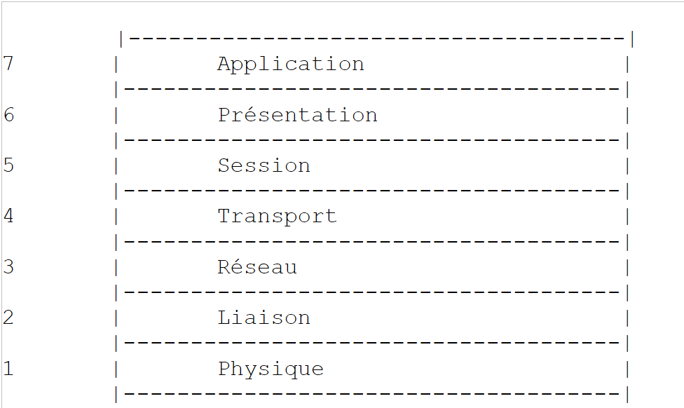
Chaque couche reçoit des services de la couche inférieure et offre les siens à la couche supérieure. Supposons que deux applications situées sur des machines A et B différentes veulent communiquer : elles le font au niveau de la couche Application. Elles n'ont pas besoin de connaître tous les détails du fonctionnement du réseau : chaque application remet l'information qu'elle souhaite transmettre à la couche du dessous, la couche Présentation. L'application n'a donc à connaître que les règles d'interfaçage avec la couche Présentation. Une fois l'information dans la couche Présentation, elle est passée selon d'autres règles à la couche Session et ainsi de suite, jusqu'à ce que l'information arrive sur le support physique et soit transmise physiquement à la machine destination. Là, elle subira le traitement inverse de celui qu'elle a subi sur la machine expéditrice.
À chaque couche, le processus expéditeur chargé d'envoyer l'information l'envoie à un processus récepteur, sur l'autre machine, appartenant à la même couche que lui. Il le fait selon certaines règles que l'on appelle le protocole de la couche. Le dialogue réel descend les couches de la machine A, traverse le réseau physique puis remonte les couches de la machine B ; mais chaque couche a l'impression de dialoguer directement avec la couche de même niveau de l'autre machine.
Le rôle des différentes couches est le suivant :
Couche | Rôle |
Physique | Assure la transmission de bits sur un support physique (câble cuivre, fibre optique, ondes radio). Les points d'intérêt à ce niveau sont le codage de l'information en signaux et le mode de transmission. |
Liaison de données | Masque les particularités physiques de la couche Physique. Découpe l'information en trames, détecte (et parfois corrige) les erreurs de transmission, gère l'accès au support partagé. |
Réseau | Gère le chemin que doivent suivre les informations envoyées sur le réseau. On appelle cela le routage : déterminer la route à suivre par une information pour qu'elle arrive à son destinataire. |
Transport | Permet la communication entre deux applications alors que les couches précédentes ne permettaient que la communication entre machines. Un service fourni par cette couche est le multiplexage : la couche transport utilise une même liaison réseau (de machine à machine) pour transmettre des informations appartenant à plusieurs applications. |
Session | Fournit des services permettant à une application d'ouvrir et de maintenir une session de travail sur une machine distante. |
Présentation | Uniformise la représentation des données sur les différentes machines. Des données provenant d'une machine A vont être « habillées » par la couche Présentation de la machine A selon un format standard avant d'être envoyées sur le réseau. Parvenues à la couche Présentation de la machine destinatrice B, qui les reconnaîtra grâce à leur format standard, elles seront habillées d'une autre façon afin que l'application de la machine B les reconnaisse. |
Application | On trouve à ce niveau les applications généralement proches de l'utilisateur, telles que la messagerie électronique, le Web ou le transfert de fichiers. |
12.1.3. Le modèle TCP/IP
Le modèle OSI est un modèle de référence qui n'a jamais été réalisé tel quel. La suite de protocoles TCP/IP, qui s'est imposée, s'organise en quatre couches seulement :

Les couches Session et Présentation n'existent pas en tant que telles dans TCP/IP : leurs fonctions, quand elles sont nécessaires, sont assurées par les applications elles-mêmes ou par des protocoles intermédiaires comme TLS (chiffrement des échanges), qui s'insère entre TCP et l'application.
La couche Accès réseau
En réseau local, la technologie dominante est aujourd'hui Ethernet pour les liaisons filaires et le Wi-Fi (normes IEEE 802.11) pour les liaisons sans fil. Le cours de 2008 présentait aussi Token-Ring, technologie aujourd'hui disparue.
Ethernet est le nom donné à une technologie de réseaux locaux à commutation de paquets inventée au PARC de Xerox au début des années 1970 et normalisée par Xerox, Intel et Digital Equipment en 1980, puis par l'IEEE (norme 802.3). L'Ethernet d'origine était constitué d'un câble coaxial auquel toutes les machines étaient raccordées (topologie en bus), avec un débit de 10 Mégabits/seconde :
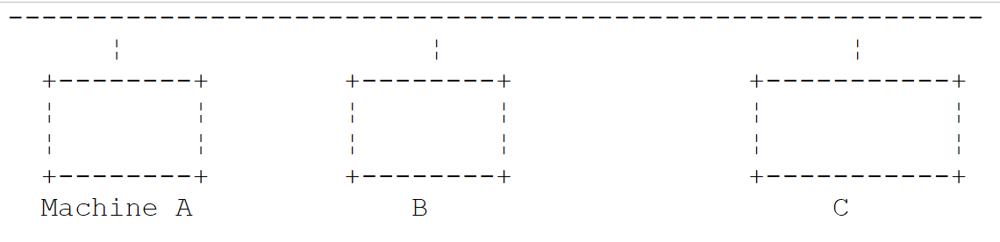
Ce réseau était diffusant : une machine qui émettait plaçait sur le câble des informations portant l'adresse de la machine destinatrice ; toutes les machines raccordées les recevaient et seule celle à qui elles étaient destinées les conservait. Comme plusieurs machines pouvaient décider d'émettre en même temps, il fallait détecter les collisions : c'était la méthode d'accès CSMA/CD (Carrier Sense Multiple Access / Collision Detect). Chaque transmetteur écoutait le câble avant d'émettre (CSMA) et, pendant qu'il émettait, vérifiait que ce qui passait sur le câble était bien ce qu'il avait émis ; sinon, il y avait collision (CD) : chacun cessait d'émettre et réessayait après un temps aléatoire.
L'Ethernet actuel a beaucoup évolué : les machines sont reliées par des câbles à paires torsadées ou des fibres optiques à un commutateur (switch) qui aiguille chaque trame vers le seul port de son destinataire. Les liaisons sont en duplex intégral (émission et réception simultanées) : il n'y a plus de collisions et CSMA/CD est devenu inutile. Les débits courants vont de 1 à 10 Gigabits/seconde, et bien davantage dans les centres de données.
Ce qui n'a pas changé, c'est l'adressage sur 48 bits : chaque carte réseau a une adresse, appelée adresse physique ou adresse MAC (Media Access Control), notée en général sous la forme de six octets hexadécimaux (par exemple [00:1A:2B:3C:4D:5E]). Elle est inscrite par le fabricant dans la carte, mais, contrairement à ce qu'affirmait le cours de 2008, elle peut être modifiée par logiciel : les systèmes d'exploitation actuels utilisent même des adresses MAC aléatoires sur les réseaux Wi-Fi, pour éviter qu'un appareil puisse être suivi de réseau en réseau.
La couche Internet (couche Réseau)
Nous trouvons au niveau de cette couche les protocoles suivants :
Protocole | Rôle |
IP (Internet Protocol) | délivre des paquets entre deux nœuds du réseau, en version 4 (IPv4) ou 6 (IPv6) |
ICMP (Internet Control Message Protocol) | réalise la communication entre le programme du protocole IP d'une machine et celui d'une autre machine. C'est donc un protocole d'échange de messages de contrôle à l'intérieur même du protocole IP |
ARP (Address Resolution Protocol) | fait la correspondance adresse IP d'une machine → adresse physique de la machine (en IPv6, ce rôle est tenu par le protocole NDP, Neighbor Discovery Protocol) |
Le cours de 2008 citait aussi RARP (Reverse Address Resolution Protocol), qui faisait la correspondance inverse. Il est abandonné depuis longtemps au profit de DHCP, que nous présentons plus loin.
La couche Transport
Dans cette couche, on trouve les protocoles suivants :
Protocole | Rôle |
TCP (Transmission Control Protocol) | assure une remise fiable et ordonnée d'informations entre deux applications |
UDP (User Datagram Protocol) | assure une remise non fiable d'informations entre deux applications |
Le protocole QUIC (2021), sur lequel repose HTTP/3, est un protocole de transport fiable et chiffré construit au-dessus d'UDP.
La couche Application
On trouve ici divers protocoles, que nous détaillerons un peu plus loin :
Protocole | Rôle |
HTTP, HTTPS (HyperText Transfer Protocol) | le protocole du Web : un client (navigateur, application) demande des ressources à un serveur web. HTTPS est HTTP chiffré par TLS |
DNS (Domain Name System) | transforme un nom de machine en adresse IP |
SMTP (Simple Mail Transfer Protocol) | permet l'envoi de courriers électroniques |
POP3, IMAP | permettent de lire le courrier électronique stocké sur un serveur |
SSH (Secure Shell) | permet de se connecter à une machine distante et d'y exécuter des commandes, de façon chiffrée. Il a remplacé TELNET, qui faisait la même chose sans chiffrement |
FTP (File Transfer Protocol), SFTP | permettent des transferts de fichiers |
DHCP (Dynamic Host Configuration Protocol) | permet à une machine d'obtenir automatiquement son adresse IP et sa configuration réseau |
12.1.4. Fonctionnement des protocoles de l'Internet
Les applications développées dans l'environnement TCP/IP utilisent généralement plusieurs des protocoles de cet environnement. Un programme d'application communique avec la couche la plus élevée des protocoles. Celle-ci passe l'information à la couche du dessous et ainsi de suite jusqu'à arriver sur le support physique. Là, l'information est physiquement transférée à la machine destinatrice où elle retraversera les mêmes couches, en sens inverse cette fois-ci, jusqu'à arriver à l'application destinatrice des informations envoyées. Le schéma suivant montre le parcours de l'information :
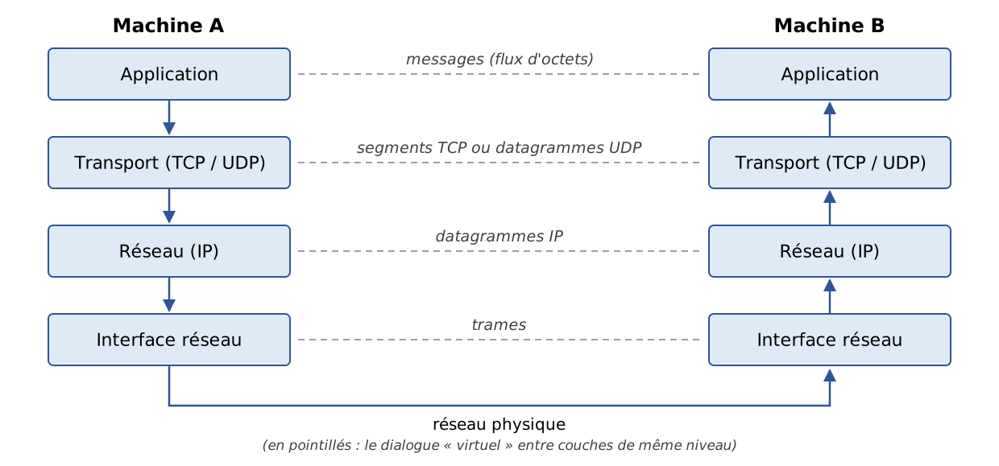
Prenons un exemple : une application qui envoie un fichier à une autre machine en utilisant TCP.
- l'application délivre une suite d'octets à transmettre à la couche transport ;
- la couche transport découpe cette suite d'octets en segments TCP et ajoute au début de chaque segment un en-tête contenant notamment les numéros de port source et destination ainsi qu'un numéro de séquence. Les segments sont passés à la couche Réseau gouvernée par le protocole IP ;
- la couche IP crée un paquet encapsulant le segment TCP reçu. En tête de ce paquet, elle place les adresses IP des machines source et destination. Elle détermine également l'adresse physique de la machine à qui remettre le paquet (le destinataire lui-même ou un routeur). Le tout est passé à la couche Accès réseau, c'est-à-dire à la carte réseau qui couple la machine au réseau physique ;
- là, le paquet IP est encapsulé à son tour dans une trame physique et envoyé à son destinataire sur le support ;
- sur la machine destinatrice, la couche Accès réseau fait l'inverse : elle désencapsule le paquet IP de la trame physique et le passe à la couche IP ;
- la couche IP vérifie que le paquet est correct : elle calcule une somme de contrôle (checksum) de son en-tête, qu'elle doit retrouver dans l'en-tête du paquet. Si ce n'est pas le cas, celui-ci est rejeté ;
- si le paquet est déclaré correct, la couche IP désencapsule le segment TCP qui s'y trouve et le passe au-dessus, à la couche transport ;
- la couche TCP vérifie elle aussi une somme de contrôle du segment. S'il est correct, elle envoie un accusé de réception à la machine source, sinon le segment est ignoré (et sera réémis par la source) ;
- grâce aux numéros de séquence, la couche TCP remet les segments dans le bon ordre ;
- il ne reste plus à la couche TCP qu'à transmettre la partie données des segments à l'application destinatrice de celles-ci, identifiée par le numéro de port destination.
12.1.5. Les problèmes d'adressage dans l'Internet
Un nœud d'un réseau peut être un ordinateur, une imprimante, un téléphone, un objet connecté, n'importe quoi en fait pouvant communiquer à l'aide des protocoles TCP/IP. Chaque nœud a une adresse physique ayant un format dépendant du type du réseau. Sur un réseau Ethernet ou Wi-Fi, l'adresse physique est codée sur 6 octets.
L'adresse Internet d'un nœud (adresse IP) est une adresse logique : elle est indépendante du matériel et du réseau utilisé. En IPv4, c'est une adresse sur 4 octets identifiant à la fois un réseau et un nœud de ce réseau. Elle est habituellement représentée sous la forme de 4 nombres, valeurs des 4 octets, séparés par un point. Ainsi, en 2008, l'adresse de la machine Lagaffe de la faculté des Sciences d'Angers était 193.49.144.1 et celle de la machine Liny 193.49.144.9. On en déduisait que l'adresse du réseau local était 193.49.144.0 et que l'on pouvait avoir jusqu'à 254 nœuds sur ce réseau.
Parce que les adresses IP sont indépendantes du réseau physique, une machine d'un réseau A peut communiquer avec une machine d'un réseau B sans se préoccuper du type de réseau sur lequel cette dernière se trouve : il suffit qu'elle connaisse son adresse IP. Le protocole IP de chaque réseau se charge de faire la conversion adresse IP ↔ adresse physique, dans les deux sens.
Les adresses IP publiques doivent être toutes différentes. Leur attribution est hiérarchique : l'IANA (Internet Assigned Numbers Authority) distribue des blocs d'adresses à cinq registres régionaux, dont le RIPE NCC pour l'Europe, qui les redistribuent aux opérateurs et aux grandes organisations. Ceux-ci les affectent ensuite à leurs clients. L'administrateur d'un réseau qui a reçu le bloc 193.49.144.0 à 193.49.144.255 peut affecter les adresses 193.49.144.1 à 193.49.144.254 comme il l'entend. Le cours de 2008 indiquait qu'en France c'était l'INRIA qui affectait les adresses : ce n'est plus le cas depuis longtemps.
12.1.5.1. Les classes d'adresses IP et la notation CIDR
Une adresse IPv4 est une suite de 4 octets notée I1.I2.I3.I4, qui contient en fait deux informations :
- l'adresse du réseau (les bits de poids fort) ;
- l'adresse d'un nœud dans ce réseau (les bits de poids faible).
À l'origine, la taille de ces deux champs était fixée par la valeur du premier octet. Les adresses IP étaient divisées en trois classes principales :
Classe | Premier octet | Réseau / nœud | Nombre de réseaux et de nœuds |
A | 1 à 126 (bit de poids fort 0) | R1.N1.N2.N3 : réseau sur 1 octet (7 bits utiles), nœud sur 3 octets | 126 réseaux de 2²⁴ - 2 nœuds (environ 16 millions) |
B | 128 à 191 (bits de poids fort 10) | R1.R2.N1.N2 : réseau sur 2 octets (14 bits utiles), nœud sur 2 octets | 2¹⁴ = 16 384 réseaux de 2¹⁶ - 2 = 65 534 nœuds |
C | 192 à 223 (bits de poids fort 110) | R1.R2.R3.N1 : réseau sur 3 octets (21 bits utiles), nœud sur 1 octet | 2²¹ réseaux (environ 2 millions) de 254 nœuds |
L'adresse de la machine Lagaffe étant 193.49.144.1, l'octet de poids fort vaut 193, c'est-à-dire en binaire 11000001 : le réseau était de classe C.
Ce découpage s'est révélé beaucoup trop rigide : une organisation de 300 machines devait demander un réseau de classe B et en gaspillait plus de 65 000 adresses. Depuis 1993 (RFC 1518 et 1519), les classes ont été abandonnées au profit du routage sans classe CIDR (Classless Inter-Domain Routing). La frontière entre la partie réseau et la partie nœud peut être placée sur n'importe quel bit ; on l'indique par la longueur du préfixe réseau, après une barre oblique :
- 193.49.144.0/24 : les 24 premiers bits désignent le réseau, les 8 derniers le nœud. Ce réseau contient les adresses 193.49.144.0 à 193.49.144.255 ;
- 10.0.0.0/8 : un réseau de 2²⁴ adresses ;
- 192.168.1.0/26 : un réseau de 2⁶ = 64 adresses, de 192.168.1.0 à 192.168.1.63.
On rencontre encore l'ancienne notation du masque de sous-réseau, qui exprime la même chose : le préfixe /24 correspond au masque 255.255.255.0. Les termes « classe A, B, C » survivent dans le langage courant, mais ne correspondent plus à aucun mécanisme réel.
12.1.5.2. Adresses réservées, adresses privées et NAT
Certaines adresses ont un rôle particulier :
- l'adresse dont la partie nœud ne comporte que des 0 désigne le réseau lui-même : 193.49.144.0 est l'adresse du réseau 193.49.144.0/24 ;
- l'adresse dont la partie nœud ne comporte que des 1 est une adresse de diffusion : 193.49.144.255 désigne tous les nœuds du réseau 193.49.144.0/24. Ces deux adresses ne peuvent donc pas être affectées à un nœud : un réseau /24 de 256 adresses n'offre que 254 adresses utilisables ;
- les adresses 127.0.0.0/8, et en pratique 127.0.0.1, sont les adresses de bouclage (loopback) : une machine les utilise pour se désigner elle-même, sans passer par le réseau. Le nom [localhost] leur est associé ;
- les blocs 10.0.0.0/8, 172.16.0.0/12 et 192.168.0.0/16 (RFC 1918) sont réservés aux réseaux privés : ils peuvent être utilisés librement à l'intérieur d'une entreprise ou d'une maison, mais ne sont pas routés sur l'Internet ;
- les blocs 192.0.2.0/24, 198.51.100.0/24 et 203.0.113.0/24 (RFC 5737) sont réservés à la documentation et aux exemples.
Le nombre d'adresses IPv4 (2³², soit un peu plus de 4 milliards) est insuffisant pour toutes les machines connectées. Le stock central de l'IANA a été épuisé en 2011, celui du RIPE NCC en 2019. La pénurie a été contournée par la traduction d'adresses NAT (Network Address Translation) : les machines d'une maison ont des adresses privées (192.168.1.x par exemple) et la box qui les relie à l'Internet les « traduit » en sa propre adresse publique, unique. La solution durable est IPv6.
12.1.5.3. Les adresses IPv6
IPv6 (RFC 2460 en 1998, aujourd'hui RFC 8200) code les adresses sur 128 bits, ce qui en offre 2¹²⁸, soit environ 3,4 × 10³⁸ : plus de pénurie à craindre. Une adresse IPv6 s'écrit sous la forme de huit groupes de quatre chiffres hexadécimaux séparés par le caractère deux-points :
Les zéros de tête de chaque groupe peuvent être omis, et une seule suite de groupes nuls peut être remplacée par [::]. L'adresse précédente s'écrit donc [2001:db8::8a2e:0:370:7334]. L'adresse de bouclage, équivalent de 127.0.0.1, est [::1]. Dans une URL, une adresse IPv6 est placée entre crochets pour ne pas confondre ses deux-points avec celui qui précède le port : [http://[::1]:8080/].
IPv6 apporte d'autres simplifications : l'en-tête des paquets est de taille fixe, la configuration automatique des adresses est prévue d'origine et la traduction d'adresses NAT n'est plus nécessaire. Son déploiement a été lent, mais une part importante et croissante du trafic de l'Internet passe aujourd'hui par IPv6 (Google publie par exemple la proportion de ses utilisateurs qui y accèdent en IPv6), et les principaux opérateurs français le fournissent à leurs abonnés. Les deux versions cohabitent : la plupart des machines ont à la fois des adresses IPv4 et IPv6 (on parle de double pile, dual stack), et les programmes doivent savoir traiter les deux.
12.1.5.4. Les protocoles de conversion adresse IP ↔ adresse physique
Nous avons vu que lors d'une émission d'informations d'une machine vers une autre, celles-ci, à la traversée de la couche IP, étaient encapsulées dans des paquets. Ceux-ci ont la forme suivante :
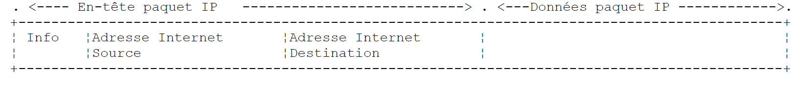
Le paquet IP contient donc les adresses IP des machines source et destination. Lorsque ce paquet va être transmis à la couche chargée de l'envoyer sur le réseau physique, d'autres informations lui sont ajoutées pour former la trame physique qui sera finalement envoyée sur le réseau. Par exemple, le format d'une trame sur un réseau Ethernet est le suivant :

Les 8 premiers octets (préambule) servent à la synchronisation ; le champ de 2 octets qui précède les données indique, dans la forme la plus répandue de la trame Ethernet, le type du protocole transporté (IPv4, IPv6, ARP…) plutôt que la longueur du paquet. Dans la trame finale, il y a les adresses physiques des machines source et destination (dans la trame réelle, l'adresse destination précède l'adresse source, contrairement à l'ordre du schéma). Comment sont-elles obtenues ?
La machine expéditrice, connaissant l'adresse IP de la machine avec qui elle veut communiquer, obtient l'adresse physique de celle-ci en utilisant le protocole ARP (Address Resolution Protocol) :
- elle envoie un paquet d'un type spécial, appelé paquet ARP, contenant l'adresse IP de la machine dont on cherche l'adresse physique. Elle a pris soin également d'y placer sa propre adresse IP ainsi que son adresse physique ;
- ce paquet est envoyé à tous les nœuds du réseau local (diffusion) ;
- ceux-ci reconnaissent la nature spéciale du paquet. Le nœud qui reconnaît son adresse IP dans le paquet répond en envoyant à l'expéditeur son adresse physique. Il le peut car il a trouvé dans le paquet les adresses IP et physique de l'expéditeur ;
- l'expéditeur reçoit donc l'adresse physique qu'il cherchait. Il la stocke dans un cache afin de pouvoir l'utiliser ultérieurement si d'autres paquets sont à envoyer au même destinataire.
En IPv6, le même service est rendu par le protocole NDP (Neighbor Discovery Protocol), qui s'appuie sur des messages ICMPv6.
Reste à savoir comment une machine connaît sa propre adresse IP. Elle peut être inscrite dans un fichier de configuration de la machine : c'est ce qu'on fait encore pour les serveurs. Mais lorsque l'administrateur doit réorganiser son réseau, modifier un à un les fichiers de configuration de toutes les machines est fastidieux et source d'erreurs. Le cours de 2008 présentait le protocole RARP, par lequel une machine demandait son adresse IP à un serveur à partir de son adresse physique. Il a été remplacé par DHCP (Dynamic Host Configuration Protocol, RFC 2131) : au démarrage, la machine diffuse une demande sur le réseau ; un serveur DHCP (la box d'un particulier, un serveur dédié dans une entreprise) lui attribue une adresse IP pour une durée limitée (un bail), ainsi que le reste de sa configuration : préfixe du réseau, adresse du routeur, adresses des serveurs DNS. L'administrateur n'a plus qu'à configurer le serveur DHCP. En IPv6, une machine peut aussi construire elle-même son adresse à partir du préfixe annoncé par le routeur (autoconfiguration SLAAC).
12.1.6. La couche réseau dite couche IP de l'Internet
Le protocole IP définit la forme que les paquets doivent prendre et la façon dont ils doivent être gérés lors de leur émission ou de leur réception. Ce type de paquet particulier est appelé un datagramme IP. Nous l'avons déjà présenté :
L'important est qu'outre les données à transmettre, le datagramme IP contient les adresses IP des machines source et destination. Ainsi la machine destinatrice sait qui lui envoie un message.
À la différence d'une trame de réseau, qui a une longueur déterminée par les caractéristiques physiques du réseau sur lequel elle transite, la longueur du datagramme IP est fixée par le logiciel et sera donc la même sur différents réseaux physiques. Nous avons vu qu'en descendant de la couche réseau dans la couche physique, le datagramme IP était encapsulé dans une trame physique.
Les trames physiques circulent de nœud en nœud vers leur destination, qui peut ne pas être sur le même réseau physique que la machine expéditrice. Le paquet IP peut donc être encapsulé successivement dans des trames physiques différentes au niveau des nœuds qui font la jonction entre deux réseaux de types différents. Il se peut aussi que le paquet IP soit trop grand pour être encapsulé dans une trame physique (la charge utile d'une trame Ethernet est limitée à 1 500 octets). En IPv4, le nœud où se pose ce problème décompose alors le paquet IP en fragments, qui ne seront réassemblés qu'à leur ultime destination. En IPv6, les routeurs ne fragmentent plus : c'est l'émetteur qui doit découvrir la taille maximale acceptée sur le chemin et adapter la taille de ses paquets.
12.1.6.1. Le routage
Le routage est la méthode d'acheminement des paquets IP à leur destination. Il y a deux méthodes : le routage direct et le routage indirect.
Routage direct
Le routage direct désigne l'acheminement d'un paquet IP directement de l'expéditeur au destinataire à l'intérieur du même réseau :
- la machine expéditrice d'un datagramme IP a l'adresse IP du destinataire ;
- elle obtient l'adresse physique de ce dernier par le protocole ARP, ou dans son cache si cette adresse a déjà été obtenue ;
- elle envoie le paquet sur le réseau à cette adresse physique.
Routage indirect
Le routage indirect désigne l'acheminement d'un paquet IP à une destination se trouvant sur un autre réseau que celui auquel appartient l'expéditeur. Dans ce cas, les parties « réseau » des adresses IP des machines source et destination sont différentes ; la machine source le constate en comparant l'adresse destination à son propre préfixe réseau. Elle envoie alors le paquet à un nœud spécial appelé routeur (router), qui connecte le réseau local aux autres réseaux et dont elle connaît l'adresse IP (on l'appelle la passerelle par défaut ; elle est en général fournie par DHCP). Un routeur est attaché à au moins deux réseaux et possède une adresse IP dans chacun d'eux :
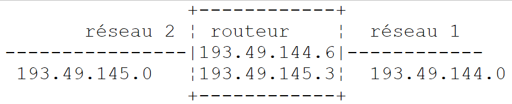
Dans notre exemple ci-dessus :
- le réseau n° 1 a l'adresse 193.49.144.0/24 et le réseau n° 2 l'adresse 193.49.145.0/24 ;
- à l'intérieur du réseau n° 1, le routeur a l'adresse 193.49.144.6 et l'adresse 193.49.145.3 à l'intérieur du réseau n° 2.
Le routeur a pour rôle de prendre le paquet IP qu'il reçoit, contenu dans une trame physique du réseau n° 1, et de le placer dans une trame physique pouvant circuler sur le réseau n° 2. Si l'adresse IP du destinataire du paquet est dans le réseau n° 2, le routeur lui enverra le paquet directement, sinon il l'enverra à un autre routeur, connectant le réseau n° 2 à un réseau n° 3, et ainsi de suite. Les routeurs de l'Internet s'échangent en permanence des informations sur les réseaux qu'ils savent atteindre (protocoles de routage comme BGP entre opérateurs) pour construire leurs tables de routage.
12.1.6.2. Messages d'erreur et de contrôle
Toujours dans la couche réseau, au même niveau donc que le protocole IP, existe le protocole ICMP (Internet Control Message Protocol). Il sert à envoyer des messages sur le fonctionnement interne du réseau : nœud injoignable, paquet ayant traversé trop de routeurs, etc. Les messages ICMP sont encapsulés dans des paquets IP et envoyés sur le réseau. Les couches IP des différents nœuds prennent les actions appropriées selon les messages ICMP qu'elles reçoivent. Ainsi, une application elle-même ne voit jamais ces problèmes propres au réseau. Les commandes [ping] (qui envoie des messages ICMP « Echo Request » et attend les « Echo Reply ») et [traceroute] / [tracert] (qui affiche les routeurs traversés) sont fondées sur ICMP.
12.1.7. La couche transport : les protocoles UDP et TCP
12.1.7.1. Le protocole UDP : User Datagram Protocol
Le protocole UDP permet un échange non fiable de données entre deux points, c'est-à-dire que le bon acheminement d'un paquet à sa destination n'est pas garanti, pas plus que l'ordre d'arrivée des paquets. L'application, si elle le souhaite, peut gérer cela elle-même, en attendant par exemple, après l'envoi d'un message, un accusé de réception avant d'envoyer le suivant.
Jusqu'à présent, au niveau réseau, nous avons parlé d'adresses IP de machines. Or, sur une machine, peuvent coexister en même temps différents processus qui tous peuvent communiquer. Il faut donc indiquer, lors de l'envoi d'un message, non seulement l'adresse IP de la machine destinatrice, mais également le « nom » du processus destinataire. Ce nom est en fait un numéro sur 16 bits (de 1 à 65 535), appelé numéro de port. Certains numéros sont réservés à des applications standard : port 53 pour DNS, 80 pour HTTP, 443 pour HTTPS, 25 pour SMTP, etc. Les ports inférieurs à 1024 sont dits « bien connus » ; sous Linux, il faut des privilèges particuliers pour ouvrir un service sur l'un d'eux. Les exemples de ce chapitre utilisent des ports des plages 27100-27199 et 27200-27299.
Les paquets gérés par le protocole UDP sont appelés des datagrammes. Ils ont la forme suivante :
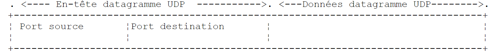
Ces datagrammes sont encapsulés dans des paquets IP, puis dans des trames physiques. UDP est utilisé quand la rapidité compte plus que la fiabilité, ou quand l'application gère elle-même les pertes : DNS (une question, une réponse), diffusion audio et vidéo en direct, jeux en réseau, et le protocole QUIC de HTTP/3.
12.1.7.2. Le protocole TCP : Transmission Control Protocol
Pour des communications sûres, le protocole UDP est insuffisant : le développeur d'applications doit élaborer lui-même un protocole lui permettant de détecter le bon acheminement des paquets. Le protocole TCP évite ces problèmes. Ses caractéristiques sont les suivantes :
- le processus qui souhaite émettre établit tout d'abord une connexion avec le processus destinataire des informations qu'il va émettre. Cette connexion se fait entre un port de la machine émettrice et un port de la machine réceptrice, par un échange de trois segments (SYN, SYN-ACK, ACK : la « poignée de main en trois temps »). Il y a entre les deux ports un circuit virtuel qui est ainsi créé et qui sera réservé aux deux seuls processus ayant réalisé la connexion ;
- tous les octets émis par le processus source arrivent à destination dans l'ordre où ils ont été émis, ce qui n'est pas garanti par le protocole UDP puisque les paquets peuvent suivre des chemins différents ;
- l'information émise a un aspect continu : c'est un flux d'octets. Le processus émetteur envoie des informations à son rythme. Celles-ci ne sont pas nécessairement envoyées tout de suite : le protocole TCP peut attendre d'en avoir assez pour les envoyer. Elles sont placées dans une structure appelée segment TCP. Ce segment, une fois rempli, sera transmis à la couche IP où il sera encapsulé dans un paquet IP. Conséquence importante pour le programmeur : une « ligne » envoyée en une fois peut arriver en plusieurs morceaux, et plusieurs lignes peuvent arriver ensemble. C'est à l'application de retrouver les limites de ses messages (nous utiliserons pour cela la fin de ligne) ;
- chaque segment envoyé par le protocole TCP est numéroté. Le protocole TCP destinataire vérifie qu'il reçoit bien les segments en séquence. Pour chaque segment correctement reçu, il envoie un accusé de réception à l'expéditeur ;
- si, au bout d'un certain temps, le protocole TCP ayant émis un segment ne reçoit pas d'accusé de réception, il retransmet le segment en question, garantissant ainsi la qualité du service d'acheminement de l'information ;
- le circuit virtuel établi entre les deux processus qui communiquent est full-duplex : l'information peut transiter dans les deux sens simultanément. Ainsi le processus destination peut envoyer des accusés de réception alors même que le processus source continue d'envoyer des informations. Cela permet par exemple au protocole TCP source d'envoyer plusieurs segments sans attendre d'accusé de réception. S'il réalise au bout d'un certain temps qu'il n'a pas reçu l'accusé de réception d'un certain segment n° n, il reprendra l'émission des segments à ce point ;
- TCP régule aussi son débit pour ne pas saturer le destinataire (contrôle de flux) ni le réseau (contrôle de congestion).
12.1.8. La couche Applications
Au-dessus des protocoles UDP et TCP existent divers protocoles standard :
TELNET et SSH
TELNET permet à un utilisateur d'une machine A de se connecter sur une machine B (appelée souvent machine hôte) comme s'il disposait d'un terminal connecté à cette machine. TELNET s'appuie sur TCP. Ses échanges, mots de passe compris, circulent en clair : il a été remplacé par SSH (Secure Shell), qui rend le même service de façon chiffrée et sert aussi au transfert sécurisé de fichiers (SFTP, SCP) et à la création de tunnels. Le programme client [telnet] restait, en 2008, un outil commode pour dialoguer « à la main » avec un serveur TCP : nous verrons comment le remplacer.
FTP (File Transfer Protocol)
Ce protocole permet l'échange de fichiers entre deux machines distantes ainsi que des manipulations de fichiers telles que des créations de répertoire. Il s'appuie sur le protocole TCP. Comme TELNET, il transmet les mots de passe en clair ; il est en voie de disparition au profit de SFTP et de HTTPS.
TFTP (Trivial File Transfer Protocol)
Ce protocole est une variante simplifiée de FTP. Il s'appuie sur le protocole UDP. Il sert encore au démarrage de machines par le réseau.
DNS (Domain Name System)
Lorsqu'un utilisateur désire échanger des informations avec une machine distante, il doit connaître l'adresse IP de cette machine. Il est bien plus agréable de désigner une machine par un nom que par son adresse IP. Se pose alors le problème de l'unicité du nom : il y a des milliards de machines interconnectées. On pourrait imaginer qu'un organisme centralisé attribue les noms : ce serait très lourd. Le contrôle des noms a été distribué dans des domaines. Chaque domaine est géré par un organisme qui a toute liberté quant au choix des noms à l'intérieur de son domaine. Ainsi les machines en France appartiennent souvent au domaine [fr], géré par l'AFNIC (l'INRIA l'a géré jusqu'à la création de l'AFNIC en 1997). Pour continuer à simplifier les choses, on distribue encore le contrôle : des domaines sont créés à l'intérieur du domaine [fr]. Ainsi l'université d'Angers possède le domaine [univ-angers.fr] ; le service qui le gère a toute liberté pour nommer les machines du réseau de l'université et pour créer des sous-domaines.
Le nom complet d'une machine (FQDN, Fully Qualified Domain Name) précise la hiérarchie des domaines auxquels elle appartient, du plus spécifique au plus général : [www.univ-angers.fr]. À l'intérieur d'un domaine, on peut souvent utiliser des noms relatifs, complétés automatiquement par le système.
Une application peut donc référencer une machine par son nom. Au bout du compte, il faut quand même obtenir l'adresse IP de cette machine. Supposons que d'une machine A on veuille communiquer avec une machine B :
- la machine A consulte d'abord un fichier local de correspondances ([/etc/hosts] sous Linux et macOS, [C:\Windows\System32\drivers\etc\hosts] sous Windows), puis son cache ;
- sinon, elle interroge le serveur DNS dont l'adresse figure dans sa configuration (fournie en général par DHCP). Elle lui envoie une requête DNS contenant le nom de la machine recherchée. Si le serveur interrogé connaît la réponse, ou l'a en cache, il renvoie à la machine A l'adresse IP correspondante. Sinon, il interroge à son tour, en partant des serveurs racine, les serveurs responsables du domaine [fr], puis de [univ-angers.fr], etc., jusqu'à obtenir la réponse, qui redescendra jusqu'à la machine A.
Le DNS associe à un nom des enregistrements de différents types : A (adresse IPv4), AAAA (adresse IPv6), CNAME (alias vers un autre nom), MX (serveurs de courrier du domaine), etc.
HTTP et HTTPS (HyperText Transfer Protocol)
C'est le protocole du Web, et de loin le plus utilisé aujourd'hui : non seulement par les navigateurs, mais aussi par les applications qui échangent des données (les services web du chapitre suivant). Nous l'étudierons en détail. HTTPS est HTTP transporté dans une connexion chiffrée par TLS (Transport Layer Security) ; c'est aujourd'hui la forme normale du Web.
SMTP, POP3 et IMAP
SMTP sert à envoyer des courriers électroniques, POP3 et IMAP à lire ceux qui sont stockés sur un serveur. Nous les présenterons également.
XDR, RPC, NFS
Le cours de 2008 présentait aussi trois protocoles définis par Sun Microsystems : XDR (eXternal Data Representation), qui spécifie une représentation standard des données indépendante des machines ; RPC (Remote Procedure Call), protocole d'appel de procédures distantes qui s'appuie sur XDR ; NFS (Network File System), qui permet à une machine de « voir » le système de fichiers d'une autre machine et s'appuie sur RPC. NFS reste utilisé dans le monde Unix. L'idée d'appel de procédure distante a été reprise par de nombreux successeurs, aujourd'hui les services web REST (sur HTTP) et gRPC (sur HTTP/2).
12.1.9. Conclusion
Nous avons présenté dans cette introduction quelques grandes lignes des protocoles Internet. Pour approfondir ce domaine, on pourra lire l'ouvrage de référence de Douglas Comer, « Internetworking with TCP/IP, Volume 1 » (Pearson, 6e édition), dont des éditions antérieures ont été traduites en français, ainsi que les RFC citées dans ce chapitre. Pour HTTP, la documentation de Mozilla developer.mozilla.org/fr/docs/Web/HTTP est une excellente introduction.
12.2. Les classes .NET de la gestion des adresses IP
Une machine du réseau Internet est désignée par une adresse IP qui peut prendre deux formes :
- IPv4 : codée sur 32 bits et représentée par une chaîne de la forme "I1.I2.I3.I4" où In est un nombre entre 0 et 255 ;
- IPv6 : codée sur 128 bits et représentée par une chaîne de huit groupes de chiffres hexadécimaux séparés par des deux-points, comme "2001:db8::8a2e:370:7334". Le cours de 2008 annonçait qu'il n'utiliserait pas les adresses IPv6 ; ce n'est plus possible aujourd'hui : nos programmes les accepteront.
Une machine peut être aussi désignée par un nom. Ce nom n'est pas obligatoire, les applications utilisant toujours au final les adresses IP des machines. Les noms sont là pour faciliter la vie des utilisateurs : il est plus facile de demander à un navigateur l'URL [https://learn.microsoft.com] que l'URL formée avec l'une des adresses IP de ce site, qui d'ailleurs change selon le lieu d'où on l'interroge.
Une machine peut avoir plusieurs adresses IP : une adresse de bouclage, une adresse par réseau auquel elle est connectée, des adresses IPv4 et IPv6.
Une adresse IP peut être représentée de deux façons dans .NET :
- sous la forme d'une chaîne de caractères "I1.I2.I3.I4" ou "2001:db8::1" ;
- sous la forme d'un objet de type [IPAddress] (espace de noms [System.Net]).
La classe IPAddress
Parmi les méthodes M, propriétés P et champs statiques F de la classe [IPAddress], on trouve les suivants :
Membre | Type | Rôle |
AddressFamily AddressFamily | P | famille de l'adresse IP. Le type [AddressFamily] (espace de noms [System.Net.Sockets]) est une énumération dont les deux valeurs courantes sont [AddressFamily.InterNetwork] (IPv4) et [AddressFamily.InterNetworkV6] (IPv6) |
static IPAddress Any | F | l'adresse IPv4 0.0.0.0. Lorsqu'un service est associé à cette adresse, il accepte des clients sur toutes les adresses IPv4 de la machine |
static IPAddress Loopback | F | l'adresse de bouclage 127.0.0.1. Un service associé à cette adresse n'accepte que les clients situés sur la même machine que lui |
static IPAddress Broadcast | F | l'adresse de diffusion 255.255.255.255 ([IPAddress.None] a la même valeur) |
static IPAddress IPv6Any, IPv6Loopback | F | les équivalents IPv6 de [Any] (::) et de [Loopback] (::1) |
static IPAddress Parse(string chaine) | M | transforme une chaîne IPv4 ou IPv6 en objet [IPAddress] ; lance une [FormatException] si la chaîne n'est pas une adresse IP |
static bool TryParse(string chaine, out IPAddress adresse) | M | idem, mais rend [false] au lieu de lancer une exception |
static bool IsLoopback(IPAddress adresse) | M | rend [true] si l'adresse est une adresse de bouclage (127.x.y.z ou ::1) |
byte[] GetAddressBytes() | M | rend les octets de l'adresse (4 en IPv4, 16 en IPv6) |
string ToString() | M | rend l'adresse sous sa forme textuelle usuelle |
Deux autres types complètent [IPAddress] :
- [IPEndPoint] représente un point de connexion : une adresse IP et un numéro de port. Ses propriétés [Address] et [Port] donnent ces deux informations ; la méthode statique [IPEndPoint.Parse] analyse une chaîne comme "127.0.0.1:27100" ou "[::1]:27100" ;
- [IPNetwork] (depuis .NET 8) représente un réseau en notation CIDR, comme 193.49.144.0/24. Sa méthode [Contains] indique si une adresse appartient au réseau.
Le programme [internet-01.cs] illustre ces trois types :
Résultats :
Commentaires :
- ligne 7 : une expression de collection initialise le tableau des chaînes à analyser ;
- ligne 12 : [TryParse] rend [true] si la chaîne est une adresse IPv4 ou IPv6 et place alors l'objet [IPAddress] obtenu dans la variable [adresse]. Le type nullable [IPAddress?] rappelle que cette variable vaut [null] lorsque l'analyse échoue ;
- ligne 14 : la propriété [AddressFamily] distingue les deux versions d'IP ;
- ligne 15 : [GetAddressBytes] rend les octets de l'adresse, que [Convert.ToHexString] affiche en hexadécimal. On voit (ligne 2 des résultats) que 193.49.144.1 est formée des quatre octets C1, 31, 90, 01 et (ligne 5) que ::1 est formée de 15 octets nuls suivis d'un octet valant 1 ;
- ligne 4 des résultats : une surprise. La chaîne "192.168.1" a été acceptée et transformée en 192.168.0.1. [TryParse] accepte en effet les formes abrégées historiques des adresses IPv4 (le dernier nombre occupe alors tous les octets restants). Pour vérifier qu'une saisie est une adresse IPv4 complète, il faut donc contrôler en plus qu'elle comporte quatre nombres ;
- ligne 6} : l'adresse IPv6 est réaffichée sous sa forme compacte normalisée. Le préfixe 2001:db8::/32 est, comme 192.0.2.0/24 en IPv4, réservé à la documentation ;
- lignes 27-31 : [IPAddress.Parse] lance une [FormatException] pour la chaîne "256.1.1.1" (256 ne tient pas dans un octet). Comme dans tout le cours, le message de l'exception est en anglais (.NET ne fournit pas de traduction française) ;
- ligne 41 : un objet [IPEndPoint] associe une adresse et un port. Son affichage (ligne 12 des résultats) a la forme adresse:port ; en IPv6 (ligne 13), l'adresse est entourée de crochets ;
- ligne 47 : un réseau en notation CIDR. Les lignes 14-15 des résultats montrent que 193.49.144.1 appartient au réseau 193.49.144.0/24 et que 193.49.145.3 (l'adresse du routeur de notre schéma, sur son second réseau) n'en fait pas partie. C'est exactement le test que fait une machine pour choisir entre routage direct et routage indirect.
La classe Dns
L'association adresse IP ↔ nom de machine est assurée par le DNS. Les méthodes statiques de la classe [Dns] (espace de noms [System.Net]) permettent de l'interroger :
Méthode | Rôle |
Task<IPHostEntry> GetHostEntryAsync(string nomOuAdresse) | rend un objet [IPHostEntry] à partir d'un nom de machine ou d'une adresse IP sous la forme d'une chaîne. Lance une [SocketException] si la machine ne peut être trouvée |
Task<IPHostEntry> GetHostEntryAsync(IPAddress adresse) | idem à partir d'un objet [IPAddress] |
Task<IPAddress[]> GetHostAddressesAsync(string nomOuAdresse) | rend seulement les adresses IP de la machine |
string GetHostName() | rend le nom de la machine sur laquelle s'exécute le programme |
Chacune de ces méthodes asynchrones a une version synchrone ([GetHostEntry], [GetHostAddresses]), celle qu'utilisait le cours de 2008. Une requête DNS peut demander plusieurs dizaines de millisecondes, voire plusieurs secondes si un serveur ne répond pas : comme nous l'avons vu au chapitre sur la programmation asynchrone, il est préférable de ne pas bloquer un thread pendant cette attente.
Un objet [IPHostEntry] encapsule les adresses IP, les alias et le nom d'une machine :
Propriété | Type | Rôle |
IPAddress[] AddressList | P | tableau des adresses IP de la machine |
string[] Aliases | P | les autres noms de la machine connus du système (souvent vide) |
string HostName | P | le nom principal de la machine |
Le programme [internet-02.cs] affiche le nom de la machine sur laquelle il s'exécute, puis donne interactivement les correspondances nom de machine ↔ adresses IP :
Résultats :
Commentaires :
- ligne 9 : le nom de la machine locale. Notre machine de test est une machine virtuelle Linux nommée [vm] ; chez le lecteur, ce sera bien sûr le nom de son propre ordinateur ;
- ligne 25 : l'interrogation asynchrone du DNS. Si le nom (ou l'adresse) est inconnu, une [SocketException] est lancée ; sa propriété [SocketErrorCode] (ligne 39) donne la nature de l'erreur sous la forme d'une énumération, plus facile à tester que le message ;
- ligne 29 : les adresses IP de la machine sont réunies en une seule chaîne par [string.Join], après avoir été transformées en chaînes par [Select] (LINQ).
Les résultats appellent quelques remarques. Ils dépendent de la configuration de la machine : ne vous attendez pas à obtenir exactement les mêmes chez vous.
- ligne 4 : le nom [localhost] correspond à l'adresse de bouclage 127.0.0.1. Sur une machine où IPv6 est actif, on obtiendrait aussi ::1 ;
- ligne 8 : le nom de la machine correspond à deux adresses, l'adresse de bouclage et l'adresse de son interface réseau. Sur un PC Windows relié à une box, on obtiendrait typiquement une adresse privée de la forme 192.168.x.y et une ou plusieurs adresses IPv6 ;
- ligne 9 : avec une adresse IP, [GetHostEntryAsync] fait une recherche « inverse » et rend le nom associé à l'adresse ;
- ligne 13 : la recherche inverse de ::1 a échoué parce que le fichier [/etc/hosts] de notre machine de test n'associe aucun nom à cette adresse et qu'aucune interface IPv6 n'y est active. Sous Windows, on obtiendrait le nom de la machine ;
- ligne 15 : le nom [xx] est inconnu. Le message de l'exception vient ici de la bibliothèque système de Linux ; il serait différent sous Windows, mais [SocketErrorCode] vaut [HostNotFound] dans les deux cas.
Sur une machine reliée à l'Internet, on peut aussi interroger un nom public comme [learn.microsoft.com]. On obtient alors, en général, un nom principal différent du nom demandé (le site est servi par un réseau de distribution de contenu et le nom demandé est un alias DNS) et des adresses qui varient selon le lieu et le moment de la requête. Nous ne reproduisons pas ce résultat, notre machine de test n'ayant pas accès à l'Internet.
12.3. Les bases de la programmation Internet
12.3.1. Généralités
Considérons la communication entre deux machines distantes A et B :
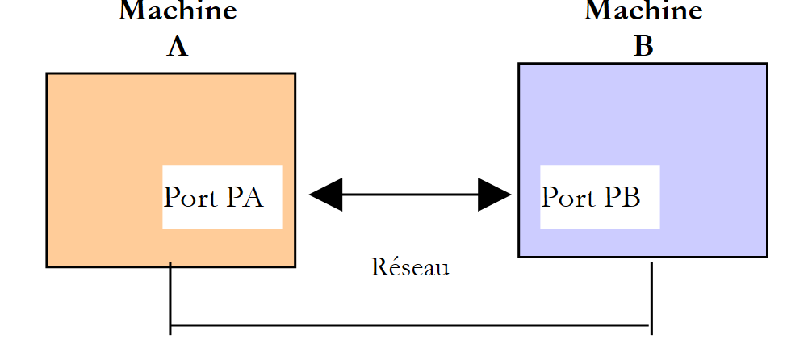
Lorsqu'une application AppA d'une machine A veut communiquer avec une application AppB d'une machine B de l'Internet, elle doit connaître plusieurs choses :
- l'adresse IP ou le nom de la machine B ;
- le numéro du port avec lequel travaille l'application AppB. En effet, la machine B peut héberger de nombreuses applications qui travaillent sur l'Internet. Lorsqu'elle reçoit des informations provenant du réseau, elle doit savoir à quelle application elles sont destinées. Les applications de la machine B ont accès au réseau via des guichets appelés ports de communication. Le numéro du port destinataire est contenu dans le segment reçu par la machine B afin que celui-ci soit délivré à la bonne application ;
- les protocoles de communication compris par la machine B. Dans notre étude, nous utiliserons uniquement les protocoles TCP/IP ;
- le protocole de dialogue accepté par l'application AppB. En effet, les machines A et B vont se « parler ». Ce qu'elles vont dire va être encapsulé dans les protocoles TCP/IP. Néanmoins, lorsqu'au bout de la chaîne l'application AppB va recevoir l'information envoyée par l'application AppA, il faut qu'elle soit capable de l'interpréter. C'est analogue à la situation où deux personnes A et B communiquent par téléphone : leur dialogue est transporté par le téléphone, mais si A parle français et que B ne comprend pas cette langue, A et B ne pourront dialoguer utilement. Les deux applications communicantes doivent donc être d'accord sur le type de dialogue qu'elles vont adopter. Par exemple, le dialogue avec un serveur web n'est pas le même qu'avec un serveur de courrier : ces deux services n'acceptent pas les mêmes commandes. Ils ont des protocoles de dialogue différents.
12.3.2. Les caractéristiques du protocole TCP
Nous n'étudierons ici que des communications réseau utilisant le protocole de transport TCP. Rappelons ses caractéristiques essentielles pour le programmeur :
- une connexion est d'abord établie entre un port de la machine cliente et un port de la machine serveur. Elle est identifiée par quatre informations : adresse IP et port du client, adresse IP et port du serveur ;
- la connexion transporte deux flux d'octets, un dans chaque sens (full-duplex). Les octets arrivent dans l'ordre où ils ont été émis, sans perte ni duplication ;
- TCP ne connaît pas la notion de message : c'est au protocole de dialogue de l'application de délimiter les demandes et les réponses (par une fin de ligne, une longueur annoncée, la fermeture de la connexion…) ;
- l'un des deux partenaires ferme la connexion ; l'autre le constate lorsqu'il arrive à la fin du flux en lecture.
12.3.3. La relation client-serveur
Souvent, la communication sur Internet est dissymétrique : la machine A initie une connexion pour demander un service à la machine B. Elle précise qu'elle veut ouvrir une connexion avec le service SB1 de la machine B. Celle-ci accepte ou refuse. Si elle accepte, la machine A peut envoyer ses demandes au service SB1. Celles-ci doivent se conformer au protocole de dialogue compris par le service SB1. Un dialogue demande-réponse s'instaure ainsi entre la machine A, qu'on appelle machine cliente, et la machine B, qu'on appelle machine serveur. L'un des deux partenaires fermera la connexion.
12.3.4. Architecture d'un client
L'architecture d'un programme réseau demandant les services d'une application serveur sera la suivante :
12.3.5. Architecture d'un serveur
L'architecture d'un programme offrant des services sera la suivante :
Le programme serveur traite différemment la demande de connexion initiale d'un client et ses demandes ultérieures visant à obtenir un service. Le programme d'écoute n'assure pas le service lui-même : s'il le faisait, pendant la durée du service il ne serait plus à l'écoute des demandes de connexion et les autres clients ne seraient pas servis. Il procède donc autrement : dès qu'une demande de connexion est reçue sur le port d'écoute puis acceptée, le serveur crée une tâche chargée de rendre le service demandé par le client, sur la connexion de service qui vient d'être établie. On peut ainsi servir plusieurs clients en même temps :
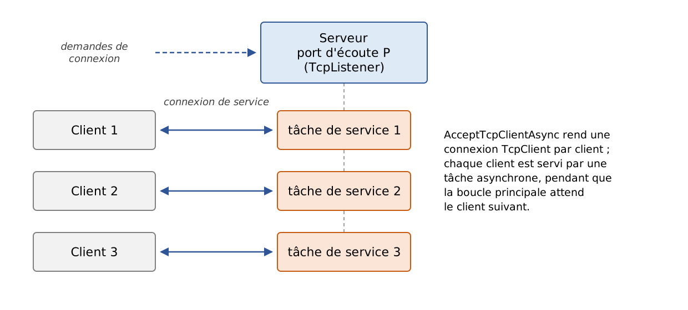
Le cours de 2008 indiquait que la connexion de service utilisait, côté serveur, un autre port, choisi au hasard. C'est inexact : toutes les connexions de service utilisent le port d'écoute du serveur ; elles se distinguent les unes des autres par l'adresse et le port du client, qui eux sont différents. Nous le constaterons dans les affichages de notre serveur d'écho.
Une tâche de service aura la structure suivante :
12.4. Découvrir les protocoles de communication de l'Internet
12.4.1. Introduction
Lorsqu'un client s'est connecté à un serveur, un dialogue s'établit entre eux. La nature de celui-ci forme ce qu'on appelle le protocole de communication du serveur. Parmi les protocoles les plus courants de l'Internet, on trouve les suivants :
- HTTP : HyperText Transfer Protocol, le protocole de dialogue avec un serveur web (serveur HTTP) ;
- SMTP : Simple Mail Transfer Protocol, le protocole de dialogue avec un serveur d'envoi de courriers électroniques (serveur SMTP) ;
- POP : Post Office Protocol, le protocole de dialogue avec un serveur de stockage du courrier électronique (serveur POP). Il s'agit là de récupérer les courriers électroniques reçus et non d'en envoyer. IMAP joue le même rôle ;
- FTP : File Transfer Protocol, le protocole de dialogue avec un serveur de stockage de fichiers (serveur FTP).
Ces protocoles, dans leurs versions historiques, ont la particularité d'être des protocoles à lignes de texte : le client et le serveur s'échangent des lignes de texte terminées par les deux caractères \r\n (retour chariot, passage à la ligne). Si on dispose d'un client capable de :
- créer une connexion avec un serveur TCP ;
- afficher à la console les lignes de texte que le serveur lui envoie ;
- envoyer au serveur les lignes de texte qu'un utilisateur tape au clavier,
alors on est capable de dialoguer avec un serveur TCP ayant un protocole à lignes de texte, pour peu qu'on connaisse les règles de ce protocole.
Le programme [telnet], qu'on trouvait sur les machines Unix et Windows, est un tel client ; le cours de 2008 utilisait l'outil PuTTY, configuré en mode de connexion brute (Raw). Le client [telnet] n'est plus installé par défaut sous Windows et la plupart des serveurs publics n'acceptent plus de dialogue en clair. Nous procéderons autrement :
- pour HTTP, nous utiliserons l'outil [curl], disponible en standard sous Windows 10 et 11, macOS et Linux, qui affiche le détail des échanges, puis le client TCP générique que nous écrirons plus loin dans ce chapitre. Sous Windows PowerShell, [curl] est un alias de la commande [Invoke-WebRequest] : il faut taper [curl.exe] ;
- comme nous n'avons pas accès à de vrais serveurs, nous interrogerons un petit serveur web que nous écrivons nous-mêmes et qui s'exécute sur la machine locale ;
- pour SMTP, POP et FTP, nous présenterons des dialogues types, conformes aux RFC qui définissent ces protocoles.
12.4.2. Un serveur web de test
Notre serveur web de test est une application ASP.NET Core « Minimal API » d'un seul fichier. ASP.NET Core est le cadre de développement web de .NET ; nous l'étudierons au chapitre suivant. Il n'est pas nécessaire de comprendre ce programme en détail pour l'instant : il suffit de savoir ce qu'il répond. Le programme [internet-03.cs] est le suivant :
Commentaires :
- ligne 1 : cette directive indique que l'application fichier unique utilise le SDK web d'ASP.NET Core ([Microsoft.NET.Sdk.Web]) au lieu du SDK console habituel. Les espaces de noms d'ASP.NET Core ([Microsoft.AspNetCore.Builder], [Microsoft.AspNetCore.Http]…) font alors partie des [using] implicites ;
- ligne 5 : le port d'écoute, 27110 par défaut ;
- lignes 13-18 : chaque requête traitée est affichée sur la console avec le code de statut de la réponse ;
- ligne 25 : l'URL [/] rend un petit document HTML. Le texte du document est écrit avec un littéral de chaîne brut [""" ... """] (C# 11), qui évite d'échapper les guillemets ;
- ligne 35 : l'URL [/bonjour?nom=xx] rend le texte [Bonjour xx !]. Le paramètre [nom] de la lambda est rempli automatiquement avec le paramètre [nom] de l'URL ;
- ligne 38 : l'URL [/ancienne] provoque une redirection temporaire (code 302) vers l'adresse relative [/bonjour?nom=visiteur] ;
- ligne 41 : l'URL [/deplacee] provoque une redirection permanente (code 301) vers l'adresse absolue [http://localhost:27110/] ;
- ligne 44 : l'URL [/boucle] redirige vers elle-même : un client qui suit aveuglément les redirections ne s'arrêterait jamais ;
- toute autre URL reçoit la réponse 404 (document introuvable) ;
- ligne 48 : le serveur écoute sur l'adresse de bouclage 127.0.0.1 : il n'est accessible que depuis la machine elle-même.
Le serveur est lancé dans une première fenêtre de commandes. Il affiche :
Les lignes 3-4 sont apparues pendant les essais du paragraphe suivant. Le serveur s'arrête par Ctrl-C.
12.4.3. Le protocole HTTP (HyperText Transfer Protocol)
Pendant que le serveur s'exécute, nous demandons, dans une seconde fenêtre de commandes, la racine [/] du site [http://localhost:27110] avec l'outil [curl]. Son option [-v] (verbose) affiche tout le dialogue HTTP :
Commentaires :
- les lignes commençant par [*] sont des informations de [curl] ; les lignes commençant par [>] ont été envoyées au serveur, celles commençant par [<] ont été reçues du serveur ; les autres forment le document reçu ;
- lignes 2-6 : [curl] a obtenu les adresses de [localhost] (::1 en IPv6 et 127.0.0.1 en IPv4) et s'est connecté au port 27110 de l'adresse 127.0.0.1 ;
- lignes 7-10 : la requête du client. Elle est formée d'une première ligne de syntaxe [méthode URL version] (ici, on demande avec la méthode [GET] le document [/], c'est-à-dire la racine du site, en HTTP/1.1), puis d'entêtes HTTP de la forme [Nom: valeur], et se termine par une ligne vide ;
- ligne 8 : l'entête [Host] indique la machine et le port interrogés ; il est obligatoire en HTTP/1.1 car un même serveur peut héberger plusieurs sites ;
- ligne 9 : l'identité du logiciel client ;
- ligne 10 : les types de documents acceptés par le client, ici tous ;
- lignes 12-16 : les entêtes de la réponse, terminés eux aussi par une ligne vide ;
- ligne 12 : la ligne de statut, de syntaxe [version code message]. Le code 200 indique que le document demandé a été trouvé ;
- ligne 13 : la taille du document en octets. C'est grâce à elle que le client sait où s'arrête le document ;
- ligne 14 : la nature du document (un document HTML) et son encodage (UTF-8) ;
- ligne 15 : la date et l'heure du serveur, toujours en temps universel (GMT) ;
- ligne 16 : le logiciel qui assure le service web, ici Kestrel, le serveur web d'ASP.NET Core. Dans le cours de 2008, c'était un serveur Apache 1.3 avec PHP 4 ;
- lignes 18-22 : le document envoyé par le serveur ;
- ligne 23 : en HTTP/1.1, la connexion reste ouverte par défaut après la réponse (mode « keep-alive ») afin de pouvoir servir d'autres requêtes ; [curl] la laisse ouverte puis la ferme en se terminant.
Demandons maintenant un document qui n'existe pas :
- ligne 7 : on a demandé un document inexistant ;
- ligne 12 : le serveur a répondu avec le code 404, qui signifie que le document demandé n'a pas été trouvé ;
- ligne 13 : le document envoyé est vide. Kestrel, par défaut, ne joint aucun document à une réponse 404 ; le serveur Apache interrogé en 2008 envoyait une petite page HTML d'explication. Un navigateur qui reçoit une réponse 404 sans document affiche sa propre page d'erreur.
Les codes de statut sont répartis en cinq familles : 1xx (information), 2xx (succès, 200 OK), 3xx (redirection, 301 et 302 que nous rencontrerons plus loin), 4xx (erreur du client : 404 Not Found, 401 Unauthorized, 403 Forbidden…), 5xx (erreur du serveur : 500 Internal Server Error…).
Le navigateur fait la même chose que [curl] : il envoie une requête HTTP, reçoit les entêtes et le document, puis affiche le document. Les outils de développement des navigateurs (touche F12, onglet Réseau) permettent de voir les entêtes échangés.
Quelques remarques sur l'état actuel de HTTP :
- HTTPS est aujourd'hui la règle : les navigateurs signalent comme « non sécurisé » un site en HTTP simple. Avec HTTPS, une négociation TLS précède le dialogue HTTP, et tout ce qui suit est chiffré. On ne peut donc plus dialoguer « à la main » avec un serveur HTTPS au moyen d'un simple client TCP. On peut en revanche toujours observer le dialogue avec [curl], qui fait la négociation TLS et affiche ensuite les entêtes en clair. À titre d'illustration seulement (nous ne reproduisons pas le résultat, notre machine de test n'ayant pas accès à l'Internet), la commande serait [curl -v https://learn.microsoft.com/] ;
- HTTP/1.1 (RFC 9112 aujourd'hui) est un protocole à lignes de texte, celui que nous étudions. HTTP/2 (2015, aujourd'hui RFC 9113) garde les mêmes méthodes, entêtes et codes de statut, mais les transmet sous une forme binaire compressée et fait circuler plusieurs requêtes simultanément sur une seule connexion TCP. HTTP/3 (2022, RFC 9114) fait la même chose au-dessus de QUIC, donc d'UDP. Navigateurs et serveurs choisissent automatiquement la version la plus récente qu'ils ont en commun ; [curl], sans option particulière, utilise HTTP/1.1 pour une URL [http://].
12.4.4. Le protocole SMTP (Simple Mail Transfer Protocol)
Les serveurs SMTP échangent le courrier entre eux sur le port 25. Un logiciel de messagerie qui envoie un courrier le confie, lui, au serveur SMTP de son fournisseur sur le port 587 (soumission, avec passage en mode chiffré par la commande [STARTTLS]) ou 465 (connexion chiffrée d'emblée), après s'être authentifié. Les fournisseurs d'accès bloquent en général les connexions sortantes vers le port 25 depuis les box de leurs abonnés, pour limiter l'envoi de pourriels par des machines infectées : le dialogue en clair que montrait le cours de 2008 n'est plus guère réalisable depuis un poste personnel.
Voici, à titre d'illustration, un dialogue SMTP type conforme à la RFC 5321. Ce n'est pas une exécution : les lignes préfixées par [C:] sont envoyées par le client, celles préfixées par [S:] par le serveur, et les domaines [example.org] et [example.com] sont réservés aux exemples :
- ligne 1 : message d'accueil du serveur. Chaque réponse du serveur commence par un code à trois chiffres : 2xx signifie succès, 3xx « continuez », 4xx et 5xx une erreur ;
- ligne 2 : le client se présente. La commande [EHLO] a remplacé la commande [HELO] du cours de 2008 : elle demande au serveur la liste des extensions qu'il offre ;
- lignes 3-6 : la réponse du serveur, sur plusieurs lignes. Le tiret qui suit le code indique que la réponse continue ; la dernière ligne a un espace à la place. Le serveur annonce ici qu'il accepte des messages de 10 Mo au plus, le passage en mode chiffré et les caractères sur 8 bits ;
- ligne 7 : l'adresse de l'expéditeur ;
- ligne 9 : l'adresse du destinataire (la commande peut être répétée pour plusieurs destinataires) ;
- ligne 11 : le client annonce le message ;
- ligne 12 : le serveur l'invite à l'envoyer et lui rappelle comment le terminer ;
- lignes 13-19 : le message, formé d'entêtes ([From], [To], [Subject]…), d'une ligne vide et du corps, et terminé par une ligne contenant uniquement un point ;
- ligne 20 : le serveur a accepté le message et l'a placé dans sa file d'attente ;
- lignes 21-22 : le client signale qu'il a terminé ; le serveur ferme la connexion.
12.4.5. Le protocole POP (Post Office Protocol)
Les serveurs POP3 opèrent sur le port 110, ou sur le port 995 pour une connexion chiffrée par TLS, la seule que proposent aujourd'hui la plupart des fournisseurs, puisque le mot de passe circule dans le dialogue. Voici un dialogue POP3 type, conforme à la RFC 1939, présenté avec les mêmes conventions que le précédent :
- ligne 1 : message de bienvenue du serveur. Les réponses POP3 commencent par [+OK] (succès) ou [-ERR] (erreur) ;
- ligne 2 : le client donne son identifiant, c'est-à-dire le nom avec lequel il lit son courrier ;
- ligne 4 : le mot de passe du client (masqué ici) ;
- ligne 6 : le client demande la liste de ses courriers ;
- lignes 7-10 : la liste des messages de la boîte aux lettres du client, sous la forme [n° du message, taille en octets], terminée par une ligne contenant uniquement un point ;
- ligne 11 : on demande le message n° 2 ;
- lignes 12-23 : le message n° 2, avec ses entêtes, une ligne vide et son corps, terminé lui aussi par un point ;
- lignes 24-25 : le client indique qu'il a fini ; le serveur ferme la connexion.
POP3 est conçu pour télécharger le courrier sur le poste de l'utilisateur. Il est aujourd'hui largement concurrencé par IMAP (port 143, ou 993 avec TLS ; RFC 9051), qui laisse les messages sur le serveur et permet de les consulter et de les classer depuis plusieurs appareils, et par les messageries web.
12.4.6. Le protocole FTP (File Transfer Protocol)
Le protocole FTP (RFC 959) est plus complexe que ceux présentés précédemment : le dialogue (les commandes et leurs réponses) se fait sur une connexion de contrôle ouverte vers le port 21 du serveur, et chaque transfert de fichier ou de liste de fichiers utilise une seconde connexion, ouverte pour l'occasion. Voici un dialogue type sur la connexion de contrôle :
- ligne 2 : connexion anonyme, que proposaient les serveurs publics de téléchargement ;
- ligne 8 : le client demande au serveur d'ouvrir un port pour la connexion de données. Le serveur répond (ligne 9) qu'il attend cette connexion sur son port 40312 ;
- ligne 10 : le client demande le fichier [lisezmoi.txt]. Le fichier arrive sur la connexion de données, et la connexion de contrôle reçoit les réponses 150 (début du transfert) et 226 (fin du transfert).
Le cours de 2008 conseillait d'observer ces commandes dans le journal du client FileZilla, ce qui reste possible. Mais FTP est en voie de disparition : il transmet les mots de passe en clair, s'accommode mal des pare-feu à cause de sa seconde connexion, et les navigateurs ne le prennent plus en charge depuis 2021 (Chrome 88, Firefox 90). On lui préfère SFTP, le transfert de fichiers par SSH, et le simple téléchargement par HTTPS.
12.5. Les classes .NET de la programmation Internet
12.5.1. Choisir la classe adaptée
.NET offre différentes classes pour travailler avec le réseau :
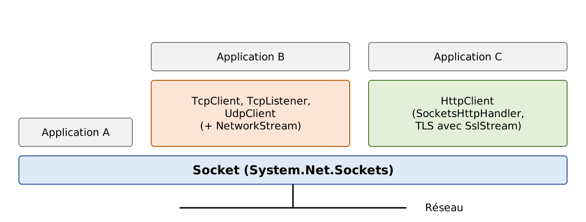
- la classe [Socket] est celle qui opère le plus près du réseau. Elle permet de gérer finement la connexion réseau. Le terme anglais socket désigne une prise de courant ; il a été étendu pour désigner une prise de réseau logicielle. Dans une communication TCP/IP entre deux machines A et B, ce sont deux sockets qui communiquent entre eux. Une application peut travailler directement avec les sockets : c'est le cas de l'application A ci-dessus. Un socket peut être un socket client ou serveur ;
- si on souhaite travailler à un niveau moins fin que celui de la classe [Socket], on pourra utiliser les classes [TcpClient] pour créer un client TCP et [TcpListener] pour créer un serveur TCP (application B ci-dessus). Ces deux classes offrent à l'application une vue plus simple de la communication réseau en gérant pour elle les détails techniques des sockets. La classe [UdpClient] joue le même rôle pour UDP ;
- .NET offre aussi des classes spécialisées dans un protocole. La plus importante est aujourd'hui [HttpClient] (application C ci-dessus), qui gère le protocole HTTP dans ses versions 1.1, 2 et 3, y compris le chiffrement TLS de HTTPS. Le cours de 2008 présentait les classes [WebClient] et [WebRequest], aujourd'hui obsolètes et remplacées par [HttpClient] (nous y reviendrons dans la seconde partie de ce chapitre), ainsi que la classe [SmtpClient] d'envoi de courrier, qui n'est pas déclarée obsolète mais que Microsoft ne recommande plus pour les nouveaux développements.
On retiendra que la classe [Socket] est suffisante en elle-même pour gérer toute communication TCP/IP, mais on cherchera avant tout à utiliser les classes de plus haut niveau afin de faciliter l'écriture de l'application.
12.5.2. La classe TcpClient
La classe [TcpClient] (espace de noms [System.Net.Sockets]) est la classe qui convient dans la plupart des cas pour créer le client d'un service TCP. Elle a, parmi ses constructeurs C, méthodes M et propriétés P, les suivants :
Membre | Type | Rôle |
TcpClient() | C | crée un client non encore connecté |
Task ConnectAsync(string machine, int port), ValueTask ConnectAsync(string machine, int port, CancellationToken jeton) | M | établit (de façon asynchrone) une connexion TCP avec le service opérant sur le port [port] de la machine [machine]. Par exemple [await client.ConnectAsync("localhost", 27110)]. Il existe des surcharges acceptant un [IPAddress] ou un [IPEndPoint]. Lance une [SocketException] si la connexion échoue |
NetworkStream GetStream() | M | obtient un flux de lecture et d'écriture vers le serveur. C'est ce flux qui permet les échanges client-serveur |
Socket Client | P | le socket utilisé par le client pour communiquer avec le serveur. Ses propriétés [LocalEndPoint] et [RemoteEndPoint] donnent les deux extrémités de la connexion |
bool Connected | P | vrai si la connexion a été établie (et n'a pas été fermée par le client) |
void Close(), void Dispose() | M | ferme la connexion. Le socket et le flux [NetworkStream] sont également fermés |
Le cours de 2008 utilisait le constructeur [TcpClient(string machine, int port)], qui se connecte de façon bloquante : le thread qui l'exécute est immobilisé pendant toute la durée de l'établissement de la connexion, qui peut atteindre plusieurs dizaines de secondes si la machine distante ne répond pas. Nous utiliserons [ConnectAsync].
La classe [NetworkStream] représente le flux réseau entre le client et le serveur. Elle est dérivée de la classe [Stream] et offre donc les méthodes [ReadAsync] et [WriteAsync] qui lisent et écrivent des octets. Beaucoup d'applications client-serveur échangent des lignes de texte. Aussi est-il intéressant d'utiliser des objets [StreamReader] et [StreamWriter], rencontrés au chapitre sur les fichiers, pour lire et écrire ces lignes dans le flux réseau :
La propriété [AutoFlush = true] signifie que chaque écriture dans [ecrivain] est immédiatement transmise au réseau, sans attendre que le tampon interne du [StreamWriter] soit plein. Ce point est important. En général, lorsqu'un client envoie une ligne de texte à son partenaire, il en attend une réponse. Celle-ci ne viendra jamais si la ligne est restée dans le tampon de la machine émettrice sans avoir été envoyée. Sans [AutoFlush], il faut appeler explicitement [FlushAsync] après avoir écrit une demande complète.
Pour envoyer une ligne de texte au serveur, on écrira :
et pour lire la réponse du serveur :
[ReadLineAsync] rend [null] lorsque le partenaire a fermé la connexion et que tout ce qu'il a envoyé a été lu : c'est la fin du flux.
Un point mérite attention : la fin de ligne. [WriteLineAsync] termine la ligne par la valeur de la propriété [NewLine] du [StreamWriter], qui vaut par défaut [Environment.NewLine], c'est-à-dire \r\n sous Windows mais \n seul sous Linux et macOS. Les protocoles de l'Internet (HTTP, SMTP, POP, FTP) exigent \r\n. Certains serveurs, comme Kestrel, tolèrent un \n seul, d'autres non ; un programme portable qui parle l'un de ces protocoles doit donc fixer [NewLine = "\r\n"]. En lecture, [ReadLineAsync] accepte indifféremment \r\n et \n.
Nous avons maintenant les éléments pour écrire l'architecture de base d'un client TCP ayant le protocole de communication basique suivant avec le serveur :
- le client envoie une demande contenue dans une unique ligne ;
- le serveur envoie une réponse contenue dans une unique ligne.
- ligne 4 : création du client. La déclaration [using] (C# 8) assure que la connexion sera fermée à la sortie du bloc qui la contient, quoi qu'il arrive. Le cours de 2008 imbriquait quatre instructions [using (...) { ... }] ; les déclarations [using] évitent ces imbrications ;
- ligne 5 : connexion asynchrone au service ;
- ligne 7 : obtention du flux réseau. [await using] (C# 8) libère l'objet en appelant sa méthode [DisposeAsync], version asynchrone de [Dispose] : la libération d'un [StreamWriter] peut en effet provoquer une dernière écriture sur le réseau ;
- lignes 8-9 : création des flux de lecture et d'écriture sur le flux réseau ;
- lignes 11-19 : le cycle demande du client / réponse du serveur ;
- ligne 16 : le client envoie sa demande au serveur ;
- ligne 18 : le client attend la réponse du serveur. Cette attente se termine par l'arrivée d'une ligne terminée par \n, ou par la fin du flux si le serveur ferme la connexion. Pendant l'attente, aucun thread n'est bloqué ;
- lignes 23-28 : une [SocketException] signale une connexion impossible (machine inconnue, aucun service sur le port demandé…), une [IOException] une erreur pendant les échanges (connexion coupée…).
12.5.3. La classe TcpListener
La classe [TcpListener] est la classe qui convient dans la plupart des cas pour créer un service TCP. Elle a, parmi ses constructeurs C, méthodes M et propriétés P, les suivants :
Membre | Type | Rôle |
TcpListener(IPAddress adresse, int port) | C | crée un service TCP qui attendra (listen) les demandes des clients sur le port [port], appelé port d'écoute, de l'adresse [adresse]. Avec [IPAddress.Any], le service écoute sur toutes les adresses IPv4 de la machine ; avec [IPAddress.Loopback], seulement sur l'adresse de bouclage |
static TcpListener Create(int port) | M | crée un service qui écoute à la fois en IPv4 et en IPv6 sur toutes les adresses de la machine |
void Start() | M | lance l'écoute des demandes des clients |
Task<TcpClient> AcceptTcpClientAsync(), ValueTask<TcpClient> AcceptTcpClientAsync(CancellationToken jeton) | M | attend (de façon asynchrone) la demande d'un client et l'accepte. Rend comme résultat l'objet [TcpClient] associé, côté serveur, à la connexion de service ouverte avec ce client |
void Stop() | M | arrête d'écouter les demandes des clients |
EndPoint LocalEndpoint | P | l'adresse et le port d'écoute |
Socket Server | P | le socket d'écoute du serveur |
Le constructeur [TcpListener(int port)] qu'utilisait le cours de 2008 est déclaré obsolète : on doit préciser l'adresse d'écoute ou utiliser [TcpListener.Create].
La structure de base d'un serveur TCP qui échange avec ses clients selon le protocole « une ligne de demande, une ligne de réponse » pourrait ressembler à ceci :
- ligne 2 : le service d'écoute est créé pour un port donné et une adresse IP donnée. Une machine a au moins deux adresses IP : l'adresse de bouclage 127.0.0.1 et l'adresse qu'elle a sur le réseau auquel elle est connectée. Elle peut en avoir d'autres si elle est connectée à plusieurs réseaux. [IPAddress.Any] désigne toutes les adresses IPv4 de la machine ;
- ligne 3 : le service d'écoute démarre. Auparavant il avait été créé, mais il n'écoutait pas encore. Écouter signifie attendre les demandes de connexion des clients ;
- lignes 5-11 : la boucle attente d'un client / lancement de son service, répétée pour chaque nouveau client ;
- ligne 8 : la demande d'un client est acceptée. [AcceptTcpClientAsync] rend une instance [TcpClient] dite de service :
- le client a fait sa demande avec sa propre instance [TcpClient], que nous appellerons [TcpClientDemande] ;
- le serveur accepte cette demande avec [AcceptTcpClientAsync], qui crée une instance [TcpClient] côté serveur, que nous appellerons [TcpClientService]. On a alors une connexion TCP ouverte avec, aux deux bouts, les instances [TcpClientDemande] ↔ [TcpClientService] ;
- la communication client / serveur qui prend place ensuite se fait sur cette connexion. Le service d'écoute n'intervient plus ;
- ligne 10 : afin que le serveur puisse traiter plusieurs clients à la fois, le service est assuré par une tâche asynchrone. Le serveur ne l'attend pas (pas d'[await]) : il retourne immédiatement attendre le client suivant. La tâche rendue par [ServirAsync] est affectée à la variable de rejet [_], ce qui indique au lecteur (et au compilateur) que l'on ignore volontairement son résultat ;
- ligne 15 : la méthode qui rend le service à un client. Elle reçoit en paramètre l'instance [TcpClient] déjà connectée au client qui doit être servi ;
- ligne 25 : on retrouve un code similaire à celui du client TCP basique étudié précédemment. La boucle s'arrête lorsque [ReadLineAsync] rend [null], c'est-à-dire lorsque le client a fermé la connexion. Le motif [is string demande] teste que la valeur lue n'est pas [null] et l'affecte à la variable [demande] ;
- ligne 34 : les exceptions doivent être interceptées dans [ServirAsync] : comme personne n'attend la tâche, une exception non interceptée passerait inaperçue.
12.5.4. Un thread par client ou une tâche par client ?
Le serveur du cours de 2008 confiait chaque client à un thread du pool ([ThreadPool.QueueUserWorkItem]), qui exécutait des lectures et des écritures bloquantes : pendant tout le temps où le client réfléchissait, son thread restait immobilisé dans [ReadLine]. Chaque thread coûte de la mémoire (une pile d'environ 1 Mo réservée) et du temps processeur au système, qui doit passer de l'un à l'autre. Avec quelques dizaines de clients, cela ne pose aucun problème ; avec des milliers de connexions simultanées, situation courante pour un serveur réel, le serveur s'effondre. Le cours limitait d'ailleurs le pool à 10 threads : le onzième client devait attendre qu'un des dix premiers se déconnecte.
Avec les méthodes asynchrones ([AcceptTcpClientAsync], [ReadLineAsync], [WriteLineAsync]), un client qui n'envoie rien ne consomme aucun thread : sa tâche est suspendue, et ce n'est qu'à l'arrivée de données que sa suite est exécutée par l'un des threads du pool. Quelques threads suffisent alors à servir des milliers de clients. C'est ainsi que fonctionnent les serveurs modernes, en particulier Kestrel, le serveur web d'ASP.NET Core. Les principes vus au chapitre sur la programmation asynchrone s'appliquent ici pleinement : [async] / [await] d'un bout à l'autre, et un [CancellationToken] pour pouvoir arrêter proprement les opérations en cours.
12.6. Exemples de clients / serveurs TCP
Les programmes de cette partie sont des applications fichier unique du dossier [12-internet]. Les serveurs et les clients sont lancés dans des fenêtres de commandes différentes, sur la même machine ; les ports utilisés sont de la forme 271xx.
12.6.1. Un serveur d'écho
Nous nous proposons d'écrire un serveur d'écho, qui sera lancé depuis une fenêtre de commandes par :
Le serveur officie sur le port passé en paramètre. Il se contente de renvoyer au client chaque ligne que celui-ci lui envoie, entourée de crochets. Le programme [internet-04.cs] est le suivant :
La structure du serveur d'écho est conforme à l'architecture de base des serveurs TCP exposée précédemment, avec quelques compléments :
- ligne 9 : le port doit être un entier compris entre 1 et 65 535. Le motif relationnel combiné [is < 1 or > 65535] (C# 9) exprime cette condition de façon concise ;
- lignes 16-21 : l'arrêt du serveur. Le serveur de 2008 était interrompu brutalement par Ctrl-C : le processus disparaissait sans fermer les connexions. Ici, l'événement [Console.CancelKeyPress] est déclenché par Ctrl-C. Son gestionnaire empêche l'arrêt immédiat du processus (ligne 20) et annule le jeton [annulation] (ligne 21) ;
- ligne 38 : l'attente d'un client reçoit le jeton d'annulation. Lorsque celui-ci est annulé, l'attente se termine par une [OperationCanceledException], interceptée ligne 45 ;
- lignes 40-42 : chaque client est servi par une tâche que la boucle n'attend pas. On garde ces tâches dans une liste, dont on retire au passage celles qui sont terminées ;
- ligne 56 : fin de l'écoute, exécutée dans tous les cas grâce au [finally] ;
- ligne 59 : avant de quitter, on attend la fin des services en cours. Comme ils ont reçu le même jeton d'annulation, ils se terminent rapidement.
La partie « service au client » :
- ligne 65 : l'adresse et le port du client ;
- ligne 76 : la demande du client est lue. Le jeton d'annulation interrompt l'attente si le serveur s'arrête. [ReadLineAsync] rend [null] lorsque le client ferme la connexion : la boucle et le service s'arrêtent alors ;
- ligne 80 : la demande est renvoyée au client, entourée de crochets ;
- lignes 85-89 : l'arrêt du serveur et une connexion coupée par le client sont traités ;
- ligne 95 : le [finally] signale la fin du service, quelle qu'en soit la cause.
Pour voir le serveur fonctionner, il nous faut un client. Le cours de 2008 utilisait PuTTY ; nous écrivons notre propre client au paragraphe suivant et présenterons les résultats après lui.
12.6.2. Un client pour le serveur d'écho
Nous écrivons maintenant un client pour le serveur précédent. Il sera appelé de la façon suivante :
Il se connecte à la machine [machine] sur le port [port], puis envoie au serveur les lignes de texte tapées au clavier, que celui-ci lui renvoie en écho. Le programme [internet-05.cs] est le suivant :
La structure de ce client est conforme à l'architecture de base proposée pour les clients TCP :
- ligne 19 : connexion asynchrone au serveur ;
- ligne 20 : on affiche les deux extrémités de la connexion : [RemoteEndPoint] (le serveur) et [LocalEndPoint] (le client). Le port du client a été choisi par le système ;
- ligne 25 : chaque ligne écrite part immédiatement ;
- ligne 31 : la demande est tapée au clavier. [Console.ReadLine] rend [null] si l'entrée standard est fermée (Ctrl-D sous Linux, Ctrl-Z puis Entrée sous Windows) ;
- ligne 33 : la comparaison avec [bye] ignore la casse ;
- ligne 38 : la demande est envoyée au serveur ;
- lignes 40-43 : on attend la réponse ; [null] signale que le serveur a fermé la connexion ;
- lignes 49-53 : les erreurs de connexion et d'échange.
Voici les résultats obtenus dans la configuration suivante :
- le serveur est lancé sur le port 27100 dans une fenêtre de commandes ;
- sur la même machine, deux clients A et B sont lancés dans deux autres fenêtres, B ayant démarré pendant que A dialoguait encore avec le serveur.
Dans la fenêtre du client A :
Le client A a envoyé trois lignes, reçues en écho, puis a tapé [bye] : il a fermé la connexion sans rien envoyer au serveur.
Dans la fenêtre du client B :
Le client B a envoyé deux lignes puis, avant qu'il ne tape la troisième, le serveur a été arrêté par Ctrl-C. La ligne [ligne3B] a été envoyée sur une connexion déjà fermée par le serveur : la lecture de la réponse (ligne 8) a rendu [null].
Dans la fenêtre du serveur :
- ligne 2 : le serveur écoute sur le port 27100 de toutes les adresses IPv4 de la machine (0.0.0.0) ;
- lignes 3-6 : les deux clients sont arrivés depuis la même machine (127.0.0.1) avec des ports différents, choisis par le système. Ce sont eux qui distinguent les deux connexions, qui aboutissent toutes deux au port 27100 du serveur ;
- ligne 6 : le client 1 (B) est servi alors que le client 0 (A) l'est encore : le serveur sert bien plusieurs clients simultanément ;
- ligne 11 : le serveur a constaté la fermeture de la connexion par le client A ;
- lignes 16-18 : Ctrl-C a été tapé dans la fenêtre du serveur. L'attente d'un nouveau client a été annulée, puis le service au client 1, qui attendait une ligne, a été interrompu par le même jeton d'annulation. Le serveur s'est arrêté proprement.
Enfin, voici ce qui se passe lorsqu'on tente de se connecter à un port sur lequel aucun service n'écoute :
[ConnectAsync] a lancé une [SocketException] de code [ConnectionRefused] : la machine a répondu, mais aucun programme n'écoute sur le port 27199. Le message vient du système d'exploitation ; il est différent sous Windows.
12.6.3. Un client TCP générique
Nous allons écrire un client TCP générique, qui sera lancé de la façon suivante :
Il aura un fonctionnement analogue à celui des clients [telnet] et PuTTY : il permettra de dialoguer avec n'importe quel serveur TCP à lignes de texte.
Dans l'application précédente, le protocole du dialogue était connu : le client envoyait une seule ligne et le serveur répondait par une seule ligne. Chaque service a son protocole particulier, et on rencontre également les situations suivantes :
- le client doit envoyer plusieurs lignes de texte avant d'avoir une réponse (une requête HTTP) ;
- la réponse d'un serveur peut comporter plusieurs lignes de texte (la réponse [EHLO] d'un serveur SMTP, un document HTML) ;
- le serveur peut parler le premier (le message d'accueil des serveurs SMTP et POP).
Le cycle « envoi d'une unique ligne au serveur / réception d'une unique ligne envoyée par le serveur » ne convient donc pas toujours. Pour gérer des protocoles plus complexes que celui de l'écho, le client TCP générique mène deux activités en parallèle :
- le programme principal lit les lignes de texte tapées au clavier et les envoie au serveur ;
- une tâche à part est consacrée à la lecture des lignes de texte envoyées par le serveur. Dès qu'elle en reçoit une, elle l'affiche sur la console. Elle ne s'arrête que lorsque la connexion est fermée.
Le cours de 2008 confiait la lecture des réponses du serveur à un thread du pool. Le programme [internet-06.cs] est le suivant :
- ligne 21 : le client se connecte au serveur ;
- ligne 31 : les lignes envoyées se terminent par \r\n, comme l'exigent les protocoles que nous voulons explorer ;
- ligne 34 : la lecture des lignes envoyées par le serveur est confiée à la méthode asynchrone [RecevoirAsync]. On ne l'attend pas tout de suite : la tâche [reception] s'exécute en parallèle du programme principal ;
- lignes 40-58 : la boucle saisie au clavier / envoi au serveur ;
- ligne 43 : il n'existe pas de lecture au clavier réellement asynchrone. On exécute donc [Console.ReadLine], qui est bloquant, dans une tâche du pool ;
- ligne 45 : [Task.WhenAny] rend la première des deux tâches qui se termine : soit la saisie d'une ligne au clavier, soit la réception, qui se termine lorsque le serveur ferme la connexion. Dans ce second cas, il est inutile d'attendre que l'utilisateur tape quelque chose : on sort de la boucle. Le client de 2008, lui, attendait que l'utilisateur tape [bye] ;
- ligne 51 : la ligne tapée au clavier ;
- ligne 58 : elle est envoyée au serveur ;
- lignes 66-67 : on ferme la connexion, puis on attend la fin de la tâche de réception, qui se termine à son tour si elle était encore en train de lire. Lorsque le programme se termine, la saisie au clavier éventuellement en cours est abandonnée ;
- lignes 71-82 : la méthode exécutée par la tâche de réception. Elle affiche chaque ligne reçue, précédée de [<--], jusqu'à la fin du flux. Si c'est le client qui ferme la connexion pendant une lecture, la lecture en cours se termine par une exception, que l'on intercepte : le filtre [when] (C# 6) ne retient que les deux types d'exception attendus.
Nous pouvons maintenant faire « à la main » une requête HTTP à notre serveur web de test, lancé dans une autre fenêtre. Les lignes précédées de [<--] sont celles envoyées par le serveur ; les autres ont été tapées au clavier :
- lignes 3-5 : la requête, tapée au clavier : on demande le document [/bonjour?nom=Serge]. L'entête [Connection: close] demande au serveur de fermer la connexion une fois sa réponse envoyée ;
- la ligne vide qui suit termine la requête. C'est elle qui déclenche la réponse du serveur ;
- ligne 7 : le document a été trouvé ;
- ligne 8 : le serveur annonce qu'il fermera la connexion après sa réponse ;
- ligne 9 : cette fois, le document est un texte brut ;
- ligne 12 : le serveur n'a pas annoncé la taille du document ([Content-Length]) ; il l'envoie par morceaux (chunks), chacun précédé de sa taille en hexadécimal ;
- lignes 14-16 : un seul morceau de 0x0f = 15 octets, le texte [Bonjour Serge !], suivi d'un morceau de taille 0 qui marque la fin du document ;
- ligne 18 : comme demandé, le serveur a fermé la connexion. Le client l'a constaté et s'est arrêté de lui-même.
Recommençons sans l'entête [Connection: close], en demandant la racine du site :
- ligne 7 : le document est annoncé avec sa taille, 174 octets. Le client sait ainsi où il se termine ;
- ligne 16 : le document a été entièrement reçu, mais le serveur n'a pas fermé la connexion : en HTTP/1.1, elle reste ouverte par défaut pour d'autres requêtes. Le serveur attend une nouvelle requête ; l'utilisateur tape alors [bye] pour fermer la connexion.
Lorsque le serveur est absent, la connexion échoue :
Le lecteur pourra utiliser ce client TCP générique avec le serveur d'écho, ou, s'il dispose d'un serveur SMTP ou POP3 acceptant les connexions en clair (un serveur de test installé localement, par exemple), pour reproduire les dialogues types présentés plus haut.
12.6.4. Un serveur TCP générique
Nous nous intéressons maintenant à un serveur :
- qui affiche à l'écran les lignes envoyées par ses clients ;
- qui leur envoie comme réponses les lignes de texte tapées au clavier par un utilisateur. C'est donc ce dernier qui fait office de serveur.
Le programme est lancé dans une fenêtre de commandes par [dotnet run internet-07.cs -- port], où [port] est le port sur lequel les clients doivent se connecter. Le service à un client est assuré par deux activités :
- le programme principal :
- traite les clients les uns après les autres et non en parallèle. C'est parce que la console ne peut être utilisée pour deux clients simultanément que notre serveur ne traite qu'un client à la fois. Les clients qui se présentent pendant ce temps voient leur connexion établie par le système, mais attendent que le programme les accepte ;
- lit les lignes tapées au clavier par l'utilisateur et les envoie au client. L'utilisateur signale par la commande [bye] qu'il clôt la connexion avec le client ;
- une tâche à part se consacre exclusivement à la lecture des lignes de texte envoyées par le client.
Le serveur ne s'arrête jamais, sauf par un Ctrl-C tapé au clavier par l'utilisateur.
Le programme [internet-07.cs] est le suivant :
- lignes 18-19 : le service d'écoute est créé et démarré. Il écoute sur toutes les interfaces réseau de la machine ;
- ligne 23 : la saisie clavier en cours. Elle est déclarée hors de la boucle des clients, pour une raison expliquée plus bas ;
- ligne 25 : boucle infinie d'attente des clients. L'utilisateur arrêtera le serveur par Ctrl-C ;
- ligne 29 : attente d'un client. Lorsqu'il arrive, l'instance [TcpClient] rendue par [AcceptTcpClientAsync] représente le côté serveur de la connexion ouverte avec lui. La déclaration [using] la libère à la fin de chaque tour de boucle ;
- ligne 34 : la lecture des lignes envoyées par le client est confiée à une tâche à part, comme dans le client générique ;
- lignes 39-65 : la boucle de saisie au clavier des réponses à envoyer au client ;
- ligne 42 : l'opérateur [??=] (C# 8) ne lance une nouvelle saisie que si aucune n'est en cours. En effet, lorsqu'un client ferme la connexion (ligne 44), on passe au client suivant sans attendre de saisie, et la lecture au clavier lancée pour le client précédent est toujours en cours : elle servira au client suivant. En lancer une seconde ferait se disputer deux lectures pour les mêmes touches ;
- ligne 53 : si l'entrée standard est fermée, le serveur s'arrête ;
- ligne 59 : la commande [bye] ferme la connexion avec le client courant ;
- ligne 65 : la ligne tapée est envoyée au client ;
- lignes 73-74 : fermeture de la connexion et attente de la fin de la tâche de lecture ;
- lignes 79-90 : la méthode qui affiche en continu sur la console les lignes de texte envoyées par le client. On retrouve là ce qui a été vu pour le client TCP générique.
Le cours de 2008 utilisait ce serveur pour simuler un serveur web interrogé par un navigateur. Nous faisons de même, en remplaçant le navigateur par [curl]. Le serveur générique est lancé sur le port 27101. Dans une autre fenêtre, on demande à [curl] l'URL [http://localhost:27101/exemple.html]. [curl] se connecte alors au port 27101 de la machine [localhost] et demande le document [/exemple.html]. Voici la fenêtre du serveur :
- ligne 4 : un client est arrivé ;
- lignes 5-8 : on découvre la requête HTTP envoyée par [curl], terminée par une ligne vide. Un navigateur enverrait bien plus d'entêtes (langues et formats acceptés, compression, cookies…) : le lecteur peut faire l'essai en demandant la même URL à son navigateur ;
- lignes 10-17 : l'utilisateur au clavier est ici le véritable serveur, et il élabore la réponse à la main. Il s'en tient au strict minimum : une ligne de statut, trois entêtes, une ligne vide et le document HTML. Il ne donne pas la taille du document ([Content-Length]) mais annonce qu'il fermera la connexion après l'avoir envoyé ([Connection: close]). C'est suffisant : en voyant la connexion fermée, le client saura que la réponse est terminée ;
- ligne 19 : l'utilisateur a tapé [bye] : le serveur ferme la connexion avec le client ;
- ligne 20 : le serveur attend un nouveau client. On l'arrête par Ctrl-C.
Et voici ce qu'a affiché [curl] :
[curl] a reçu exactement ce qui a été tapé dans la fenêtre du serveur (lignes 12-18) et a constaté la fermeture de la connexion (ligne 19). Un navigateur aurait affiché la page HTML reçue, avec son titre [Serveur générique] dans l'onglet.
12.6.5. Un client web
Nous avons vu dans l'exemple précédent les entêtes HTTP qu'envoie [curl]. Nous allons écrire un client web auquel on passe en paramètre une URL, et qui affiche à l'écran tout ce que lui envoie le serveur. Nous supposons que celui-ci comprend le protocole HTTP/1.1. Notre client enverra la requête suivante :
- la première ligne indique le document désiré ;
- l'entête [Host], le serveur interrogé ;
- l'entête [User-Agent], l'identité de notre client ;
- l'entête [Connection], que nous souhaitons que le serveur ferme la connexion après nous avoir répondu : nous lirons sa réponse jusqu'à la fin du flux ;
- la ligne vide termine la requête.
Si, dans la première ligne, nous remplaçons [GET] par [HEAD], le serveur ne nous enverra que les entêtes HTTP de sa réponse, et pas le document.
Notre client web sera appelé de la façon suivante : [dotnet run internet-08.cs -- URL commande], où [URL] est l'URL désirée et [commande] l'un des deux mots clés [GET] ou [HEAD]. Le programme [internet-08.cs] est le suivant :
La nouveauté de ce programme est l'utilisation de la classe [Uri] (espace de noms [System]). Le programme reçoit une URL (Uniform Resource Locator), forme particulière d'URI (Uniform Resource Identifier), de la forme [http://serveur:port/chemin?param1=val1¶m2=val2]. La classe [Uri] permet de décomposer cette chaîne en ses différents éléments :
- ligne 15 : [Uri.TryCreate] construit un objet [Uri] à partir de la chaîne [args[0]] et rend [false] si la chaîne n'est pas une URI absolue valide (absence du schéma, du serveur…). Le cours de 2008 utilisait le constructeur [new Uri(...)] dans un [try/catch] ; [TryCreate] évite l'exception. On vérifie aussi que le schéma est [http] : notre client ne sait pas faire la négociation TLS de [https]. Une fois l'objet [Uri] construit, on a accès aux différents éléments de l'URI. Ainsi, si l'objet [uri] a été construit à partir de la chaîne [http://localhost:27110/bonjour?nom=Serge], on a :
- [uri.Scheme] : http ;
- [uri.Host] : localhost ;
- [uri.Port] : 27110 (80 si le port n'est pas indiqué dans l'URL, 443 pour https) ;
- [uri.Authority] : localhost:27110 (le port est omis s'il est le port par défaut du schéma) ;
- [uri.AbsolutePath] : /bonjour ;
- [uri.Query] : ?nom=Serge ;
- [uri.PathAndQuery] : /bonjour?nom=Serge ;
- ligne 22 : le motif [not (... or ...)] (C# 9) vérifie que la commande est [GET] ou [HEAD] ;
- ligne 32 : connexion au serveur désigné par l'URL ;
- ligne 36 : HTTP exige des fins de ligne \r\n ;
- lignes 38-42 : la requête HTTP ;
- ligne 44 : on n'a pas utilisé [AutoFlush] : la requête est envoyée en une seule fois, après avoir été entièrement écrite ;
- lignes 46-48 : la réponse est affichée jusqu'à ce que le serveur ferme la connexion.
Demandons les seuls entêtes de la racine de notre serveur de test :
On obtient la ligne de statut et les entêtes, terminés par une ligne vide, mais pas le document. L'entête [Content-Length] donne la taille qu'aurait eue le document avec la commande [GET]. Avec la commande [GET] et un document envoyé par morceaux :
On remarquera les guillemets autour de l'URL dans la commande : sans eux, certains interpréteurs de commandes donneraient un sens particulier au caractère [?]. Le document ([Bonjour Serge !]) est encadré par les tailles de ses morceaux, comme nous l'avons déjà vu. Notre client affiche la réponse brute ; un vrai client HTTP doit, lui, reconstituer le document à partir des morceaux.
Un document inexistant :
Une URL qui fait l'objet d'une redirection :
- ligne 2 : le code 302 indique une redirection : le document demandé se trouve, temporairement, à une autre adresse ;
- ligne 7 : cette adresse est donnée par l'entête [Location]. Elle est ici relative : l'adresse complète est [http://localhost:27110/bonjour?nom=visiteur].
Notre client s'est arrêté là. Un navigateur, lui, aurait demandé automatiquement la nouvelle adresse. C'est ce que fera notre prochain client.
Enfin, une URL [https] est refusée :
12.6.6. Un client web gérant les redirections
Le client web précédent ne gère pas une éventuelle redirection de l'URL qu'il a demandée. Les codes de statut de redirection sont les suivants :
Code | Signification |
301 Moved Permanently | le document a définitivement changé d'adresse ; un navigateur pourra mémoriser la nouvelle adresse |
302 Found | le document se trouve temporairement à une autre adresse |
303 See Other | la réponse doit être demandée à une autre adresse, avec la méthode [GET] (utilisé après l'envoi d'un formulaire) |
307 Temporary Redirect, 308 Permanent Redirect | comme 302 et 301, mais le client doit refaire la requête avec la même méthode ([POST] reste [POST]) |
Dans tous les cas, la nouvelle adresse est donnée par l'entête [Location], sous forme absolue ou relative. Le client de 2008 détectait une redirection à la présence du mot [moved] dans la ligne de statut. C'est fragile : le message qui suit le code est libre, et Kestrel répond [302 Found], sans le mot [moved]. Nous nous fondons sur le code de statut lui-même.
Le programme [internet-09.cs] est le suivant :
1 2 3 4 5 6 7 8 9 10 11 12 13 14 15 16 17 18 19 20 21 22 23 24 25 26 27 28 29 30 31 32 33 34 35 36 37 38 39 40 41 42 43 44 45 46 47 48 49 50 51 52 53 54 55 56 57 58 59 60 61 62 63 64 65 66 67 68 69 70 71 72 73 74 75 76 77 78 79 80 81 82 83 84 85 86 87 88 89 90 91 92 93 94 95 96 97 98 99 100 101 102 103 104 | |
Par rapport à la version précédente, les changements sont les suivants :
- ligne 25 : les codes de statut qui signalent une redirection ;
- ligne 27 : le nombre maximal de redirections suivies. Sans limite, un serveur mal configuré pourrait entraîner notre client dans une boucle infinie (les navigateurs abandonnent après une vingtaine de redirections) ;
- ligne 32 : le code qui était exécuté précédemment pour une unique URL peut l'être maintenant successivement pour plusieurs URL ;
- ligne 35 : la méthode [DemanderAsync] demande l'URL courante, affiche la réponse et rend l'adresse de redirection, ou [null] s'il n'y a pas de redirection ;
- lignes 42-44 : on abandonne si le nombre maximal de redirections est atteint ;
- ligne 48 : le constructeur [Uri(Uri base, string relative)] calcule la nouvelle URL. Si [location] est une adresse absolue, elle est utilisée telle quelle ; si elle est relative, elle est complétée à partir de l'URL courante [uri]. Le cours de 2008 distinguait les deux cas par un test : ce constructeur s'en charge ;
- lignes 64-103 : la demande d'une URL :
- ligne 80 : on lit la ligne de statut, par exemple [HTTP/1.1 302 Found] ;
- lignes 82-84 : on en extrait le code, deuxième champ de la ligne, et on regarde s'il fait partie des codes de redirection ;
- lignes 88-94 : on lit les entêtes jusqu'à la ligne vide. S'il y a redirection, on cherche l'entête [Location], sans tenir compte de la casse puisque les noms d'entêtes HTTP y sont insensibles. L'expression [entete["Location:".Length..]] utilise une plage (C# 8) pour extraire ce qui suit le nom de l'entête ;
- lignes 98-103 : le reste de la réponse est affiché, puis on rend l'adresse de redirection trouvée.
Reprenons l'URL [/ancienne] :
- lignes 2-7 : la redirection temporaire vers une adresse relative ;
- ligne 9 : la nouvelle URL, complétée par [new Uri(uri, location)] ;
- lignes 11-19 : la réponse à la nouvelle URL. Le document, de 0x12 = 18 octets, a été envoyé par morceaux.
L'URL [/deplacee] fait l'objet d'une redirection permanente vers une adresse absolue :
L'URL [/boucle] redirige vers elle-même :
Notre client a suivi trois redirections, puis a abandonné (ligne 32). Avec la commande [HEAD], aucun document n'a été envoyé.
La fenêtre du serveur web a enregistré toutes les requêtes des paragraphes [Un client web] et [Un client web gérant les redirections] :
On y retrouve, pour chaque redirection, la requête qui l'a provoquée puis la requête vers la nouvelle adresse (lignes 7-8), et les quatre requêtes de la boucle interrompue (lignes 11-14).
Écrire un client HTTP sur TCP permet de comprendre le protocole, mais un client réel doit gérer bien d'autres choses : le chiffrement TLS, l'envoi par morceaux, la compression, les connexions persistantes, HTTP/2 et HTTP/3… La seconde partie de ce chapitre présente la classe [HttpClient] de .NET, qui fait tout cela pour nous.
12.7. Les classes .NET spécialisées dans un protocole
Dans les exemples précédents, le protocole HTTP était géré avec un client TCP : il nous fallait construire nous-mêmes les requêtes, analyser les lignes de statut et les entêtes, suivre les redirections. Nous aurions pu construire de la même façon un client SMTP ou POP. .NET offre des classes spécialisées dans les protocoles HTTP et SMTP. Ces classes connaissent le protocole de communication entre le client et le serveur et évitent au développeur d'avoir à le gérer. Nous les présentons maintenant.
Les programmes de cette seconde partie sont, comme ceux de la première, des applications fichier unique du dossier [12-internet], numérotées à la suite ([internet-10.cs] à [internet-19.cs]). L'application exemple de la fin du chapitre forme une solution à part, [ImpotsV8]. Les ports utilisés sont de la forme 272xx.
12.7.1. Les classes WebClient et WebRequest, aujourd'hui obsolètes
Le cours de 2008 présentait deux familles de classes :
- la classe [WebClient], qui demandait un document en une instruction (méthodes [DownloadString], [DownloadData], [DownloadFile], [OpenRead]) ou en envoyait un (méthodes [UploadString], [UploadValues] pour un formulaire…) ;
- les classes [WebRequest] / [WebResponse] et leurs dérivées [HttpWebRequest] / [HttpWebResponse], plus souples : elles permettaient de choisir la méthode HTTP ([GET], [HEAD], [POST]), d'ajouter des entêtes, de lire la réponse au fur et à mesure.
Ces classes existent toujours dans .NET 10, pour la compatibilité, mais elles sont déclarées obsolètes depuis .NET 6. Le petit programme suivant les utilise :
Sa compilation produit les deux avertissements suivants (nous ne reproduisons que ces deux lignes de l'affichage de [dotnet build]) :
Le message est clair : il faut utiliser la classe [HttpClient]. Celle-ci est apparue avec .NET 4.5 (2012) ; elle a été conçue d'emblée pour la programmation asynchrone (toutes ses méthodes réseau sont asynchrones), elle gère HTTP/1.1, HTTP/2 et HTTP/3, réutilise ses connexions et peut être utilisée par plusieurs tâches à la fois. Dans .NET actuel, [WebClient] et [WebRequest] ne sont d'ailleurs plus que des façades construites au-dessus de [HttpClient]. Nous ne les étudierons pas davantage et reprenons avec [HttpClient] les exemples que le cours de 2008 traitait avec elles.
12.7.2. La classe HttpClient
12.7.2.1. Un serveur web de test
Pour illustrer les possibilités de [HttpClient], il nous faut un serveur web plus riche que celui de la première partie ([internet-03.cs]) : il doit accepter des formulaires, échanger du JSON, et savoir se faire attendre. Nous écrivons donc un second serveur de test, [internet-10.cs], application ASP.NET Core « Minimal API » comme le premier. Là encore, il n'est pas nécessaire de comprendre ce programme en détail pour l'instant (ASP.NET Core sera présenté au chapitre suivant) : il suffit de savoir ce que répond chaque URL.
1 2 3 4 5 6 7 8 9 10 11 12 13 14 15 16 17 18 19 20 21 22 23 24 25 26 27 28 29 30 31 32 33 34 35 36 37 38 39 40 41 42 43 44 45 46 47 48 49 50 51 52 53 54 55 56 57 58 59 60 61 62 63 64 65 66 67 68 69 70 71 72 73 74 75 76 77 78 79 80 81 82 83 84 85 86 87 88 89 90 91 92 93 94 95 96 97 98 99 100 101 102 103 104 105 106 107 108 109 110 111 112 113 114 115 116 117 118 119 120 121 122 123 | |
Commentaires :
- ligne 2 : les applications fichier unique sont prêtes par défaut pour la compilation native AOT, qui désactive la sérialisation JSON par réflexion. Comme au chapitre 5, nous la réactivons : le serveur pourra transformer automatiquement ses objets en JSON ;
- lignes 14-27 : chaque requête est affichée sur la console avec le port du client et le code de statut de la réponse. Le port du client nous permettra de savoir si deux requêtes ont emprunté la même connexion TCP. Si le client abandonne une requête avant d'avoir reçu la réponse, Kestrel annule le jeton [RequestAborted] et l'opération en cours se termine par une [OperationCanceledException] : on l'affiche aussi ;
- ligne 35 : l'URL [/] rend un petit document HTML ;
- ligne 45 : l'URL [/bonjour?nom=xx] rend le texte [Bonjour xx !] ;
- ligne 48 : l'URL [/entetes] renvoie au client, sous forme de texte, les entêtes HTTP de sa requête. Elle va nous permettre de voir ce qu'envoie [HttpClient]. Le cours de 2008 utilisait pour cela le serveur TCP générique, que l'utilisateur au clavier devait ensuite faire répondre ;
- lignes 52-55 : une redirection temporaire vers [/bonjour?nom=visiteur] et une redirection qui boucle sur elle-même, comme dans le serveur de la première partie ;
- ligne 58 : une réponse 500 (erreur interne du serveur) ;
- ligne 61 : l'URL [/lent?secondes=n] ne répond qu'au bout de n secondes. Le jeton [token] est annulé si le client abandonne la requête : l'attente s'interrompt alors ;
- ligne 68 : l'URL [/formulaire] reçoit un formulaire envoyé par la méthode [POST] et décrit ce qu'elle a reçu ;
- ligne 76 : l'URL [/texte] reçoit un texte quelconque par [POST] et le renvoie en majuscules ;
- lignes 84-114 : une petite « base » de personnes, échangée au format JSON. [GET /api/personnes] rend la liste des personnes, [GET /api/personnes/n] la personne n° n (ou une réponse 404), [POST /api/personnes] ajoute la personne envoyée par le client, lui attribue un numéro et répond avec le code 201 (Created). Plusieurs requêtes pouvant être traitées en même temps par des threads différents, la liste est protégée par un verrou [Lock] (chapitre 8) ;
- ligne 123 : le type [Personne], un enregistrement ([record]) ;
- ligne 120 : le serveur écoute sur le port 27210 de l'adresse de bouclage.
Le serveur est lancé dans une fenêtre de commandes et y reste pendant tous les essais de cette section. Les requêtes qu'il a reçues seront présentées à la fin de la section.
12.7.2.2. Télécharger un document : GetStringAsync
La façon la plus simple d'obtenir un document avec [HttpClient] est d'utiliser l'une des méthodes suivantes :
Méthode | Rôle |
Task<string> GetStringAsync(string url) | demande l'URL [url] par la méthode [GET] et rend le document reçu sous forme de chaîne de caractères |
Task<byte[]> GetByteArrayAsync(string url) | idem, le document étant rendu sous forme de tableau d'octets (une image, par exemple) |
Task<Stream> GetStreamAsync(string url) | idem, le document étant rendu sous forme de flux, à lire au fur et à mesure (un gros fichier, par exemple) |
Chacune existe aussi avec un paramètre de type [Uri] et avec un paramètre [CancellationToken] supplémentaire. Ces méthodes lancent une [HttpRequestException] si le serveur répond par un code d'erreur.
Le programme [internet-11.cs] est le suivant :
Résultats (le serveur [internet-10.cs] ayant été lancé dans une autre fenêtre) :
Commentaires :
- ligne 5 : création du client. La propriété [BaseAddress] fixe l'adresse à laquelle sont rattachées les URL relatives utilisées ensuite : [bonjour?nom=Serge] désigne ainsi [http://localhost:27210/bonjour?nom=Serge]. La barre oblique finale de l'adresse de base est importante : sans elle, le dernier segment du chemin serait remplacé par l'URL relative ;
- ligne 8 : une seule instruction suffit pour obtenir le document. [HttpClient] a construit la requête, s'est connecté, a analysé la réponse et reconstitué le document envoyé par morceaux ([Transfer-Encoding: chunked]) que notre client TCP de la première partie affichait tel quel ;
- ligne 13 : ligne 3 des résultats, on découvre que [HttpClient] n'envoie par défaut que l'entête [Host], obligatoire. Le [WebClient] de 2008 ajoutait [Connection: Keep-Alive] ; c'est inutile en HTTP/1.1, où la connexion est maintenue par défaut. Il n'y a pas non plus d'entête [User-Agent] : certains serveurs publics refusent les requêtes qui n'en ont pas ;
- lignes 16-17 : la collection [DefaultRequestHeaders] contient les entêtes ajoutés à toutes les requêtes de ce client. Les entêtes courants ont une propriété typée, comme [UserAgent] ; les autres s'ajoutent par leur nom avec [Add]. Les lignes 7-8 des résultats montrent qu'ils ont bien été reçus par le serveur ;
- ligne 22 : le document est obtenu sous forme d'octets. Notons l'URL [/] : une URL relative commençant par une barre oblique désigne la racine du site de l'adresse de base ;
- lignes 26-33 : un document inexistant. [GetStringAsync] lance une [HttpRequestException] dont la propriété [StatusCode] (de type [HttpStatusCode?], .NET 5) donne le code de statut reçu. Le cours de 2008 obtenait dans ce cas une [WebException].
12.7.2.3. Requête et réponse : HttpRequestMessage et HttpResponseMessage
Les méthodes [GetXxxAsync] ne donnent que le document. Pour maîtriser la requête (méthode, entêtes) ou examiner la réponse (statut, entêtes), on utilise les classes [HttpRequestMessage] et [HttpResponseMessage] :
Membre | Rôle |
new HttpRequestMessage(HttpMethod methode, Uri url) | une requête. [HttpMethod] a des propriétés statiques pour les méthodes courantes : [HttpMethod.Get], [HttpMethod.Head], [HttpMethod.Post]… |
HttpRequestMessage.Headers, Content | les entêtes de la requête et le document éventuellement envoyé (méthode [POST]) |
Task<HttpResponseMessage> SendAsync(HttpRequestMessage requete) | méthode de [HttpClient] qui envoie la requête et rend la réponse. [GetAsync(url)] est un raccourci pour une requête [GET] |
HttpResponseMessage.StatusCode, ReasonPhrase, Version | la ligne de statut : code (énumération [HttpStatusCode]), message et version de HTTP |
HttpResponseMessage.IsSuccessStatusCode | vrai si le code de statut est compris entre 200 et 299 |
HttpResponseMessage.EnsureSuccessStatusCode() | lance une [HttpRequestException] si le code de statut n'est pas compris entre 200 et 299 |
HttpResponseMessage.Headers | les entêtes de la réponse elle-même ([Date], [Server], [Location]…) |
HttpResponseMessage.Content | le document reçu ([HttpContent]) : ses entêtes propres ([Content.Headers] : [Content-Type], [Content-Length]…) et les méthodes [ReadAsStringAsync], [ReadAsByteArrayAsync], [ReadAsStreamAsync] pour le lire |
HttpResponseMessage.RequestMessage | la requête à laquelle répond la réponse : en cas de redirection, c'est la dernière requête émise |
Nous reprenons avec ces classes le client web de la première partie ([internet-08.cs], [internet-09.cs]), qui était appelé avec une URL et la méthode [GET] ou [HEAD]. Le cours de 2008 faisait de même avec les classes [HttpWebRequest] / [HttpWebResponse]. Le programme [internet-12.cs] est le suivant :
Commentaires :
- ligne 13 : comme dans [internet-08.cs], on vérifie que l'URL est valide. Le schéma [https] est cette fois accepté : [HttpClient] sait faire la négociation TLS ;
- ligne 27 : un [HttpClient] délègue le travail réseau à un gestionnaire (handler), par défaut un objet [SocketsHttpHandler] créé pour lui. Nous le créons nous-mêmes pour régler l'une de ses propriétés : [MaxAutomaticRedirections] limite à 3 le nombre de redirections suivies (50 par défaut). C'est aussi le gestionnaire qui gère le pool de connexions, les cookies ([UseCookies]), la décompression ([AutomaticDecompression]) et le proxy ([Proxy]) ;
- ligne 29 : la propriété [Timeout] fixe le délai maximal d'obtention d'une réponse (100 secondes par défaut) ;
- lignes 33-34 : la requête, avec la méthode demandée et un entête [User-Agent] propre à cette requête. Le cours de 2008 n'avait pas trouvé comment faire une requête [HEAD] avec [WebClient] : avec [HttpRequestMessage], il suffit de choisir la méthode ;
- ligne 36 : la requête est envoyée ; la réponse est disponible lorsque ses entêtes et, par défaut, son document ont été reçus. [HttpResponseMessage] est [IDisposable] : la déclaration [using] libère ses ressources ;
- lignes 38-39 : la ligne de statut. [reponse.RequestMessage.RequestUri] est l'URL de la dernière requête : en cas de redirection, elle diffère de l'URL demandée ;
- lignes 42-43 : [HttpClient] range les entêtes dans deux collections : ceux de la réponse et ceux qui décrivent le document ;
- ligne 45 : si le code de statut n'indique pas un succès, une [HttpRequestException] est lancée ;
- ligne 48 : le document est lu sous forme de chaîne de caractères. Le jeu de caractères indiqué par l'entête [Content-Type] ([charset=utf-8]) est utilisé pour décoder les octets reçus ;
- ligne 50 : depuis .NET 8, la propriété [HttpRequestError] de l'exception indique la nature de l'erreur sous la forme d'une énumération : [ConnectionError], [NameResolutionError], [SecureConnectionError]… Elle vaut [Unknown] pour un code de statut d'erreur ;
- ligne 54 : un délai dépassé se traduit, pour des raisons historiques, par une [TaskCanceledException] dont l'exception interne est une [TimeoutException] : le filtre [when] le vérifie ;
- lignes 60-64 : un nom d'entête peut avoir plusieurs valeurs ; chaque élément de la collection [HttpHeaders] est une paire (nom, valeurs) que l'on déconstruit dans le [foreach].
Demandons la racine du site :
On retrouve les informations que nous avions obtenues en analysant nous-mêmes la réponse avec le client TCP : la ligne de statut, les entêtes [Date] et [Server] de la réponse, puis les entêtes [Content-Length] et [Content-Type] du document.
Une URL qui fait l'objet d'une redirection :
La redirection a été suivie automatiquement : la réponse obtenue est celle de l'URL [/bonjour?nom=visiteur] (ligne 2). Comparons avec la première partie : le client [internet-09.cs] devait lire la ligne de statut, en extraire le code, chercher l'entête [Location], calculer la nouvelle URL et recommencer, dans une boucle limitée à trois redirections. Ici, tout cela est fait par le gestionnaire [SocketsHttpHandler]. Le document, envoyé par morceaux (ligne 6), a été reconstitué. Pour traiter soi-même les redirections, il suffit de fixer [AllowAutoRedirect = false] sur le gestionnaire : la réponse 302 est alors rendue telle quelle.
Un document inexistant :
Le code 404 est disponible dans la réponse, avec ses entêtes. C'est [EnsureSuccessStatusCode] qui a lancé l'exception. Le cours de 2008, avec [HttpWebRequest], obtenait directement une [WebException] et devait aller chercher la réponse dans l'exception ; avec [HttpClient], seules les méthodes [GetStringAsync], [GetByteArrayAsync] et [GetStreamAsync] lancent une exception pour un code d'erreur : [SendAsync] et [GetAsync] rendent la réponse, et c'est au programme de décider.
L'URL [/boucle], qui redirige vers elle-même :
Après trois redirections, le gestionnaire renonce et rend la dernière réponse reçue, une réponse 302. Elle n'est pas comprise entre 200 et 299 : [EnsureSuccessStatusCode] lance une exception.
Une erreur du serveur :
Un port où aucun serveur n'écoute :
La propriété [HttpRequestError] vaut [ConnectionError] : le serveur n'a pas pu être joint. Enfin, une URL [https] adressée à notre serveur, qui ne parle que HTTP en clair :
La négociation TLS a échoué ([SecureConnectionError]). Sur une machine reliée à l'Internet, une URL comme [https://learn.microsoft.com/] serait servie normalement, en HTTP/2 ou HTTP/3 selon les capacités du serveur.
Une dernière remarque sur les proxys. Le cours de 2008 consacrait un paragraphe aux proxys HTTP, ces machines par lesquelles les postes d'un réseau d'entreprise doivent passer pour accéder au Web. Par défaut, [HttpClient] utilise le proxy configuré pour le système (paramètres de Windows, variables d'environnement [HTTP_PROXY] et [HTTPS_PROXY] sous Linux et macOS). On peut en imposer un autre avec la propriété [Proxy] du gestionnaire, [new SocketsHttpHandler { Proxy = new WebProxy("proxy.example.org:3128") }], ou n'en utiliser aucun avec [UseProxy = false].
12.7.2.4. Envoyer des données au serveur : GET et POST
Un client peut transmettre des informations au serveur de deux façons :
- avec la méthode [GET], les informations font partie de l'URL : [/document?param1=valeur1¶m2=valeur2] ;
- avec la méthode [POST], elles forment le document joint à la requête, après la ligne vide qui termine les entêtes. L'entête [Content-Type] en indique le format. Pour un formulaire HTML, le document a le même format que la partie paramètres d'une URL : [param1=valeur1¶m2=valeur2], avec le type [application/x-www-form-urlencoded].
Dans les deux cas, les valeurs doivent être encodées : certains caractères (l'espace, [&], [=], [?], les lettres accentuées…) ne peuvent figurer tels quels dans une URL ou dans un formulaire. Le cours de 2008 utilisait pour cela la méthode [HttpUtility.UrlEncode] ; on utilise aujourd'hui [Uri.EscapeDataString] pour une valeur à placer dans une URL, et la classe [FormUrlEncodedContent] encode elle-même un formulaire.
Les méthodes d'envoi de [HttpClient] sont [PostAsync], [PutAsync] et [PatchAsync]. Elles reçoivent l'URL et le document à envoyer, un objet dérivé de [HttpContent] :
Classe | Document envoyé |
FormUrlEncodedContent | un formulaire, construit à partir d'une collection de paires (nom, valeur) |
StringContent | un texte, avec son encodage et son type ([text/plain], [application/json]…) |
ByteArrayContent, StreamContent | des octets quelconques, un flux (un fichier, par exemple) |
MultipartFormDataContent | un formulaire contenant des fichiers ([multipart/form-data]) |
JsonContent | un objet transformé en JSON (espace de noms [System.Net.Http.Json]) |
Le programme [internet-13.cs] est le suivant :
Résultats :
Commentaires :
- lignes 9-10 : la valeur [Jean & Marie] est placée dans l'URL. Sans encodage, le caractère [&] serait pris pour le séparateur de deux paramètres et le serveur recevrait le paramètre [nom] avec la valeur [Jean]. Ligne 2 des résultats, on voit que l'espace est devenu [%20] et le caractère [&] [%26] : c'est le code hexadécimal du caractère, précédé de [%] ;
- lignes 15-19 : le formulaire est construit à partir d'une expression de collection de paires [KeyValuePair<string, string>] ; le type de chaque élément étant connu, [new(...)] suffit ;
- ligne 22 : pour l'observer, nous lisons le document qui sera envoyé : ligne 4 des résultats, on retrouve le format [nom=valeur&nom=valeur]. Dans un formulaire, l'espace est encodé par [+] ;
- ligne 23 : le formulaire est envoyé par la méthode [POST] à l'URL [/formulaire]. Le serveur indique (lignes 5-6) qu'il a reçu un document de type [application/x-www-form-urlencoded] et qu'il en a extrait, décodés, les trois champs ;
- ligne 30 : un texte, codé en UTF-8, de type [text/plain]. Le serveur le renvoie en majuscules (ligne 9) : les caractères accentués ont fait correctement l'aller et retour.
On remarquera les blocs [using (...) { ... }] : nous ne pouvions pas utiliser ici de déclaration [using], car il y a deux variables [reponse] dans le même bloc de code. La différence entre [GET] et [POST], notée par le cours de 2008, reste vraie : un navigateur affiche dans sa barre d'adresse les paramètres d'une requête [GET], pas ceux d'une requête [POST] ; de plus, une requête [GET] ne doit servir qu'à consulter des informations, une requête [POST] servant à en envoyer ou à modifier l'état du serveur.
12.7.2.5. Échanger des objets au format JSON
Les applications échangent aujourd'hui la plupart de leurs données au format JSON, présenté au chapitre 5. L'espace de noms [System.Net.Http.Json] ajoute à [HttpClient] et à [HttpContent] des méthodes d'extension qui font, en une instruction, la requête HTTP et la conversion entre objets et JSON avec [System.Text.Json] :
Méthode | Rôle |
Task<T?> GetFromJsonAsync<T>(string url) | demande l'URL par [GET] et transforme le document JSON reçu en objet de type [T] |
Task<HttpResponseMessage> PostAsJsonAsync<T>(string url, T objet) | envoie par [POST] l'objet transformé en JSON (type [application/json]) et rend la réponse. [PutAsJsonAsync] fait de même avec la méthode [PUT] |
Task<T?> ReadFromJsonAsync<T>() | méthode de [HttpContent] : transforme le document JSON d'une réponse en objet de type [T] |
Le programme [internet-14.cs] est le suivant :
Résultats :
Commentaires :
- ligne 1 : comme pour le serveur, on réactive la sérialisation JSON par réflexion. L'autre solution, vue au chapitre 6 pour la couche [dao] de la version 5, est un contexte de sérialisation généré à la compilation ([JsonSerializerContext]) : chacune des méthodes ci-dessus a une surcharge qui l'accepte ;
- ligne 10 : la liste des personnes. Le document JSON [[{"id":1,"nom":"Dupont","age":42},...]] envoyé par le serveur est directement transformé en liste d'objets [Personne]. Le résultat est de type [List<Personne>?] : le document JSON pourrait être [null] ;
- ligne 12 : si c'est le cas, on parcourt une liste vide ;
- ligne 18 : une seule personne ;
- ligne 23 : l'objet [martin] est transformé en JSON et envoyé au serveur. Le serveur répond avec le code 201 (Created) et l'entête [Location], qui donne l'URL de la nouvelle ressource (ligne 7 des résultats) ;
- ligne 28 : le document JSON reçu : les noms des propriétés sont en « camelCase » ([id], [nom], [age]), la convention du Web. Les méthodes de [System.Net.Http.Json] utilisent les options [JsonSerializerDefaults.Web], qui font la conversion avec les propriétés C# [Id], [Nom], [Age] ;
- ligne 29 : le même document, transformé en objet. Notons que le document a pu être lu deux fois : [HttpClient] l'a conservé en mémoire, la requête ayant été faite sans l'option [HttpCompletionOption.ResponseHeadersRead] que nous verrons plus loin ;
- lignes 34-40 : comme [GetStringAsync], [GetFromJsonAsync] lance une [HttpRequestException] si le code de statut indique une erreur.
Nous retrouverons ces méthodes au chapitre suivant, où le serveur de calcul de l'impôt deviendra un service web JSON.
12.7.2.6. Délai d'attente, annulation et réutilisation du client
Le programme [internet-15.cs] illustre trois points importants pour l'utilisation de [HttpClient] dans une vraie application :
Résultats :
Commentaires :
- ligne 8 : une seule instance de [HttpClient] est utilisée par tout le programme. C'est la règle : un objet [HttpClient] gère un pool de connexions et les réutilise d'une requête à l'autre ; il est prévu pour durer et peut être utilisé par plusieurs tâches simultanément. Créer un [HttpClient] pour chaque requête, dans un [using], est une erreur classique : chaque instance ouvre ses propres connexions, que le système garde ensuite quelque temps en réserve après leur fermeture (état TIME_WAIT de TCP) ; un programme qui fait beaucoup de requêtes finit par épuiser les ports disponibles. Nous avons écrit des [using] dans les programmes précédents parce qu'ils ne faisaient que quelques requêtes avant de se terminer ;
- ligne 11 : chaque requête doit obtenir sa réponse en 2 secondes au plus ;
- lignes 16-18 : trois requêtes successives. Nous verrons dans le journal du serveur qu'elles ont emprunté la même connexion TCP ;
- lignes 22-29 : une réponse qui arrive en 1 seconde, puis une réponse qui en demanderait 3 : au bout de 2 secondes, la requête est abandonnée et une [TaskCanceledException] est lancée (ligne 9 des résultats). L'expression [(int[])[1, 3]] donne un type à l'expression de collection, qui n'en a pas par elle-même ;
- lignes 37-45 : une annulation décidée par le programme. Toutes les méthodes de [HttpClient] acceptent un jeton d'annulation, comme les méthodes asynchrones étudiées au chapitre 9. Ici, le jeton est annulé automatiquement au bout d'une demi-seconde (constructeur [CancellationTokenSource(TimeSpan)]) ; dans une application interactive, il le serait par un bouton [Annuler] ou par Ctrl-C. L'exception est encore une [TaskCanceledException] ; c'est le filtre [when (annulation.IsCancellationRequested)] qui distingue l'annulation d'un dépassement du délai ;
- lignes 51-58 : quatre requêtes lancées simultanément sur le même client, puis attendues ensemble par [Task.WhenAll] (chapitre 9). Chacune demande une seconde au serveur ; l'ensemble a pris une seconde (ligne 17) : les requêtes ont été traitées en parallèle.
Le journal du serveur [internet-10.cs] montre toutes les requêtes reçues depuis le début de cette section :
- lignes 3-7 : les cinq requêtes de [internet-11.cs] sont arrivées par la même connexion (même port client) : le client l'a gardée ouverte entre deux requêtes ;
- lignes 9-10 : la requête redirigée de [internet-12.cs] et la requête vers la nouvelle adresse, faite automatiquement sur la même connexion ;
- lignes 12-15 : la requête initiale et les trois redirections suivies avant abandon ;
- lignes 24-28 : les requêtes successives de [internet-15.cs] ont toutes utilisé la même connexion. La requête trop lente a été abandonnée par le client (ligne 28) : [HttpClient] a fermé la connexion, et le serveur a vu son jeton [RequestAborted] annulé ;
- ligne 29 : la requête annulée par le programme a dû ouvrir une nouvelle connexion, la précédente ayant été fermée ;
- les quatre dernières lignes : les quatre requêtes simultanées ont utilisé quatre connexions différentes, ouvertes pour l'occasion. En HTTP/1.1, une connexion ne transporte qu'une requête à la fois ; HTTP/2 permettrait de les faire passer toutes par une seule connexion.
Un programme qui reste longtemps en service (un serveur, un service système) doit tenir compte d'un dernier point : un [HttpClient] unique garde ses connexions indéfiniment et ne voit donc pas les changements d'adresse IP des serveurs qu'il interroge, que le DNS ferait apparaître. On fixe pour cela une durée de vie aux connexions avec la propriété [PooledConnectionLifetime] du gestionnaire [SocketsHttpHandler] (par exemple deux minutes). Dans les applications fondées sur l'hôte générique de .NET ([Microsoft.Extensions.Hosting]) et dans ASP.NET Core, on obtient plutôt les [HttpClient] par l'interface [IHttpClientFactory] : déclarée avec [services.AddHttpClient()] (paquet [Microsoft.Extensions.Http]), cette fabrique fournit des clients configurés (adresse de base, entêtes, délai) dont elle gère elle-même les gestionnaires et leur durée de vie. Le lecteur la rencontrera dans la documentation d'ASP.NET Core.
12.7.3. Application : un client proxy d'un service web de traduction
Nous montrons maintenant comment [HttpClient] permet d'exploiter les ressources du Web, même lorsque celles-ci n'ont pas été prévues pour être utilisées par un programme.
12.7.3.1. L'application
Le cours de 2008 utilisait le site de traduction [trans.voila.fr]. L'utilisateur y tapait un texte, choisissait un sens de traduction (« Français vers Anglais »…) dans une liste déroulante, cliquait sur un bouton et obtenait une page HTML contenant la traduction. Le cours écrivait une classe [ServiceTraduction] qui faisait la même chose par programme : elle construisait l'URL de la requête, interrogeait le site, et retrouvait la traduction dans la page HTML reçue au moyen d'une expression régulière. Une interface graphique Windows Forms s'appuyait sur cette classe ; on parle de client « proxy » (mandataire) : la classe [ServiceTraduction] se substitue au site et le cache à son utilisateur.
Ce site n'existe plus, et notre machine de test n'a pas accès à l'Internet. Nous gardons l'idée en remplaçant le site par un petit site local qui l'imite : il a le même formulaire (une zone de texte, une liste déroulante des sens de traduction écrite comme celle du site de 2008) et rend la traduction au même endroit de sa page. Ses « traductions » sont faites mot à mot avec de petits dictionnaires : c'est la technique du client qui nous intéresse, pas la qualité de la traduction. L'interface graphique est remplacée par un programme de test console, comme celui du cours de 2008. L'architecture est la suivante :
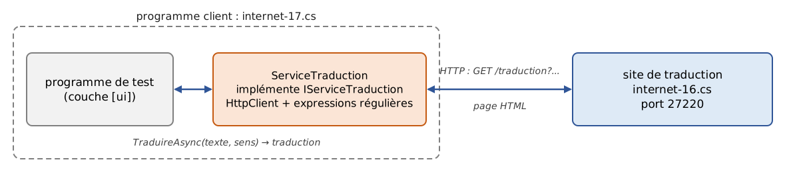
12.7.3.2. Le site de traduction
Le programme [internet-16.cs] est le suivant :
Commentaires :
- lignes 11-26 : les trois sens de traduction proposés, avec leur code ([fe] pour français → anglais, comme sur le site de 2008), leur libellé et leur dictionnaire. Les libellés contiennent une entité HTML ([ç] pour [ç]), comme ceux du site d'origine ;
- ligne 43 : l'unique page du site, [/traduction], reçoit éventuellement deux paramètres : le sens de traduction [sens] et le texte [texte] ;
- lignes 58-60 : la liste déroulante. Comme sur le site de 2008, les balises [<option>] ne sont pas fermées : le HTML des sites réels n'est pas toujours très propre, et notre client devra s'en accommoder ;
- lignes 74-75 : la traduction mot à mot. L'expression régulière [\w+'?] désigne un mot, suivi éventuellement d'une apostrophe ([l'], [d']) ; chaque mot est remplacé par sa traduction, ou laissé tel quel s'il est inconnu ;
- ligne 76 : la traduction est placée dans une balise [<div class="txtTrad">], comme sur le site de 2008. Elle est encodée par [WebUtility.HtmlEncode] : les caractères qui ont un sens en HTML ([<], [&]…) et, avec cette méthode, les lettres accentuées sont remplacés par des entités ;
- ligne 80 : un sens de traduction inconnu donne une page sans traduction.
Voici la page obtenue avec [curl] pour la traduction de [l'été sera chaud] en espagnol ; on remarquera l'encodage du texte dans l'URL :
Pour écrire le client, il nous faut, comme en 2008 :
- savoir ce qu'attend le site : une requête [GET /traduction?sens=code&texte=texte encodé]. Sur un site réel, on le découvre en regardant l'URL affichée par le navigateur après une traduction, ou l'attribut [action] du formulaire ;
- savoir où se trouvent, dans les pages reçues, les informations qui nous intéressent : les sens de traduction sont dans les balises [<option value='code'>libellé] de la liste déroulante (ligne 10 de la page ci-dessus), et la traduction dans la balise [<div class="txtTrad">] (ligne 16). On le découvre en affichant le code source de la page dans le navigateur.
Deux expressions régulières (chapitre 5) permettent d'extraire ces informations :
- [<option[^>]*value='(\w+)'>([^<\r\n]+)] : une balise [<option], suivie de caractères autres que [>], de [value='], du code (premier groupe), de [>], puis du libellé, c'est-à-dire des caractères qui suivent jusqu'au prochain [<] ou à la fin de la ligne (second groupe) ;
- [<div class="txtTrad">(.*?)</div>] : la traduction est le texte (premier groupe) compris entre la balise ouvrante et la première balise [</div>] qui suit. Le quantificateur [*?] est « paresseux » : il prend le moins de caractères possible.
12.7.3.3. Le client ServiceTraduction
Le cours de 2008 répartissait le client en deux projets : une bibliothèque pour la classe [ServiceTraduction] et son interface, une application Windows Forms pour l'interface graphique, configurée par Spring.NET. Pour rester bref, nous réunissons dans une seule application fichier unique l'interface [IServiceTraduction], son implémentation [ServiceTraduction], l'exception [TraductionException] et le programme de test. Le programme [internet-17.cs] est le suivant :
1 2 3 4 5 6 7 8 9 10 11 12 13 14 15 16 17 18 19 20 21 22 23 24 25 26 27 28 29 30 31 32 33 34 35 36 37 38 39 40 41 42 43 44 45 46 47 48 49 50 51 52 53 54 55 56 57 58 59 60 61 62 63 64 65 66 67 68 69 70 71 72 73 74 75 76 77 78 79 80 81 82 83 84 85 86 87 88 89 90 91 92 93 94 95 96 97 98 99 100 101 102 103 104 105 106 107 108 109 110 111 112 113 114 115 116 117 118 119 120 121 122 123 124 125 126 127 128 129 130 131 132 133 134 135 136 137 138 139 140 141 142 143 144 145 146 147 148 149 | |
Commençons par l'interface et l'exception :
- lignes 53-58 : l'interface présentée au programme. La propriété [LanguesTraduites] est le dictionnaire des sens de traduction acceptés par le site, d'entrées de la forme [fe] → [Français vers Anglais] ; la méthode [TraduireAsync] traduit le texte [texte] dans le sens dont le code est [sens]. En 2008, la méthode était synchrone ; elle est maintenant asynchrone, comme les méthodes de [HttpClient] qu'elle utilise ;
- lignes 62-66 : l'exception propre au service, avec un code d'erreur, sur le modèle de [ImpotException] (chapitre 6).
La classe [ServiceTraduction] :
- ligne 70 : la classe est partielle ([partial]) parce que le code de ses expressions régulières est généré à la compilation (attribut [GeneratedRegex], chapitre 5) ;
- ligne 73 : le service ne crée pas son [HttpClient] : il le reçoit du programme, qui décide de sa configuration (adresse de base, délai) et de sa durée de vie ;
- ligne 77 : le constructeur est privé. Le service ne peut être créé qu'après avoir interrogé le site, ce qui est une opération asynchrone ; or un constructeur ne peut pas être asynchrone. On passe donc par une méthode de fabrication statique, [CreerAsync] ;
- lignes 84-89 : les deux expressions régulières présentées plus haut. La première est un littéral de chaîne verbatim [@"..."] (pas de séquences d'échappement), la seconde un littéral de chaîne brut [""" ... """] (C# 11), qui permet d'écrire les guillemets de [class="txtTrad"] sans les doubler ;
- lignes 92-113 : la création du service. Le cours de 2008 inscrivait la liste des sens de traduction dans le fichier de configuration de Spring. Nous la lisons sur le site lui-même, ce qui nous assure qu'elle est à jour :
- ligne 97 : on demande la page du formulaire, sans paramètres ;
- ligne 99 : une erreur de communication est encapsulée dans une [TraductionException] de code 11 ;
- lignes 104-107 : chaque balise [<option>] trouvée par l'expression régulière fournit un code (groupe 1) et un libellé (groupe 2). [WebUtility.HtmlDecode] remplace les entités HTML par les caractères qu'elles désignent : [Français] devient [Français] ;
- lignes 117-147 : la traduction :
- lignes 120-122 : on vérifie que le sens de traduction demandé existe. Le code de 2008 avait ici une erreur : [String.Format] y était appelée sans la valeur à insérer dans le message ; l'interpolation de chaîne rend ce genre d'erreur impossible ;
- ligne 125 : l'URL à demander, le texte étant encodé ;
- ligne 129 : [GetAsync] rend la réponse dès que ses entêtes sont arrivés, sans attendre le document. Le cours de 2008 avait préféré [HttpWebRequest] à [WebClient] pour pouvoir lire la page ligne par ligne et s'arrêter dès que la traduction était trouvée ; l'option [ResponseHeadersRead] permet de faire de même avec [HttpClient] ;
- lignes 131-138 : on lit le document au fur et à mesure de son arrivée, ligne par ligne, et on cherche la traduction dans chaque ligne. Dès qu'on l'a trouvée, on la rend, décodée ; les déclarations [using] ferment le flux et libèrent la réponse, et le reste de la page n'est jamais lu ;
- ligne 142 : une erreur de communication donne une exception de code 11 ;
- ligne 147 : si la page a été lue entièrement sans qu'on y trouve de traduction, on lance une exception de code 12.
Le programme de test :
- ligne 8 : l'adresse du site peut être passée en argument ;
- ligne 9 : le client HTTP de l'application ;
- ligne 13 : la création du service. Le programme ne manipule ensuite le service qu'au travers de son interface [IServiceTraduction] ;
- lignes 20-27 : les essais du cours de 2008, plus deux cas d'erreur : un texte vide et un sens de traduction inconnu. Le tableau est un tableau de tuples nommés (C# 7) ;
- ligne 29 : chaque tuple est déconstruit en deux variables.
Résultats, le site [internet-16.cs] ayant été lancé dans une autre fenêtre :
- lignes 3-5 : les sens de traduction ont été lus dans le formulaire du site, et les entités HTML décodées ;
- ligne 9 : un mot inconnu est rendu tel quel, comme le faisait le site de 2008 ;
- ligne 10 : pour un texte vide, le site a renvoyé son formulaire sans traduction ;
- ligne 11 : le sens [fx] a été refusé par le service sans interroger le site.
Si le site est absent :
Côté site, on retrouve la requête de [curl] vue plus haut, puis celles envoyées par le client : la première pour le formulaire, les suivantes pour les traductions (le sens [fx], refusé par le service, n'a donné lieu à aucune requête) :
12.7.3.4. Conclusion
Cette application a montré que [HttpClient] nous permet d'exploiter les ressources du Web. La technique est à chaque fois la même :
- déterminer l'URL à interroger. Elle est la plupart du temps paramétrée ;
- l'interroger ;
- trouver dans la réponse du serveur ce qu'on cherche, grâce à des expressions régulières.
Cette technique, que l'on appelle aujourd'hui le « web scraping » (moissonnage du Web), est fragile : au fil du temps, l'URL interrogée ou la structure de la page peuvent changer, et l'expression régulière qui permettait de trouver le résultat ne fonctionne plus. On a intérêt à placer ces informations dans un fichier de configuration, mais cela ne suffit pas toujours ; de plus, les conditions d'utilisation de nombreux sites l'interdisent. Une analyse robuste d'une page HTML se ferait d'ailleurs plutôt avec une bibliothèque spécialisée (AngleSharp, HtmlAgilityPack) qu'avec des expressions régulières. Nous verrons au chapitre suivant qu'il existe sur le Web des ressources plus stables, conçues pour être utilisées par des programmes : les services web. Les services de traduction actuels, par exemple, offrent tous une interface de ce type, qui reçoit et rend du JSON.
12.7.4. Un client SMTP avec la classe SmtpClient
Un client SMTP est un client d'un serveur SMTP, serveur d'envoi de courrier, dont nous avons présenté le protocole dans la première partie. La classe [SmtpClient] de l'espace de noms [System.Net.Mail] encapsule les besoins d'un tel client : le développeur n'a pas à connaître les détails du protocole SMTP, ni ceux du format MIME des messages. Elle est accompagnée des classes [MailMessage] (un message), [MailAddress] (une adresse électronique) et [Attachment] (une pièce jointe).
La classe [SmtpClient] existe toujours dans .NET 10 et n'est pas déclarée obsolète, mais sa documentation indique que Microsoft ne la recommande pas pour les nouveaux développements : elle ne gère pas les protocoles modernes d'authentification (OAuth 2.0, que les grands fournisseurs de messagerie imposent de plus en plus) et n'évoluera plus. La documentation recommande la bibliothèque libre MailKit (paquet NuGet [MailKit]), qui gère aussi la lecture du courrier en POP3 et IMAP. Ce paquet n'étant pas disponible dans l'environnement de travail de ce cours, nous présentons [SmtpClient], dont les principes (un message, des adresses, des pièces jointes, un client qui l'envoie) se retrouvent à l'identique dans MailKit.
Le cours de 2008 présentait [SmtpClient] dans une application Windows Forms qui envoyait le courrier au port 25 d'un vrai serveur SMTP, après avoir demandé au lecteur de désactiver la protection de son antivirus. Nous ferons plus simple et plus sûr : le courrier sera envoyé à un petit serveur SMTP de test, écrit en C# et exécuté sur la machine locale, qui affichera tout ce qu'il reçoit et n'acheminera rien. Pour un usage réel, il existe des serveurs de test complets, comme Mailpit ou smtp4dev, qui offrent en plus une interface web pour consulter les messages reçus.
12.7.4.1. Un serveur SMTP de test
Notre serveur SMTP reprend la structure du serveur d'écho de la première partie : une boucle asynchrone d'attente des clients, une tâche par client, un jeton d'annulation déclenché par Ctrl-C. Le service rendu à chaque client est le dialogue SMTP minimal présenté dans la première partie. Le programme [internet-18.cs] est le suivant :
1 2 3 4 5 6 7 8 9 10 11 12 13 14 15 16 17 18 19 20 21 22 23 24 25 26 27 28 29 30 31 32 33 34 35 36 37 38 39 40 41 42 43 44 45 46 47 48 49 50 51 52 53 54 55 56 57 58 59 60 61 62 63 64 65 66 67 68 69 70 71 72 73 74 75 76 77 78 79 80 81 82 83 84 85 86 87 88 89 90 91 92 93 94 95 96 97 98 99 100 101 102 103 104 105 106 107 108 109 110 111 112 113 114 115 116 117 118 119 120 121 122 123 124 125 126 127 128 129 130 131 132 133 134 135 136 137 138 139 140 141 142 143 144 | |
Ne commentons que ce qui est nouveau par rapport au serveur d'écho :
- ligne 19 : le serveur n'écoute que sur l'adresse de bouclage : seuls des programmes de la même machine peuvent s'y connecter ;
- ligne 55 : SMTP exige des fins de ligne \r\n, quel que soit le système ;
- lignes 58-61 : une fonction locale (C# 7) qui envoie une ligne de réponse au client et l'affiche sur la console, précédée de [S:]. Les lignes reçues du client sont affichées précédées de [C:], comme dans les dialogues types de la première partie ;
- lignes 65-66 : l'enveloppe du message en cours : l'expéditeur annoncé par [MAIL FROM] et les destinataires annoncés par [RCPT TO] ;
- ligne 68 : le message d'accueil : en SMTP, c'est le serveur qui parle le premier ;
- ligne 73 : le verbe de la commande est formé de ses quatre premiers caractères ([EHLO], [MAIL], [RCPT]…), dont on ignore la casse ;
- lignes 76-80 : la réponse à [EHLO] est faite de plusieurs lignes. Le serveur y annonce ses extensions : la taille maximale d'un message ([SIZE]) et l'acceptation des caractères codés sur 8 bits ([8BITMIME]) ;
- ligne 96 : une clause [case] peut être complétée par une condition [when] : la commande [DATA] est refusée si l'expéditeur ou les destinataires n'ont pas été indiqués ;
- lignes 99-110 : le message lui-même. Le serveur invite le client à l'envoyer (code 354), puis lit et affiche toutes les lignes jusqu'à une ligne réduite à un point, et confirme la réception (code 250) ;
- lignes 122-124 : le client a terminé : le serveur répond et ferme la connexion, en sortant de la méthode ;
- ligne 126 : toute autre commande est refusée.
Ce serveur ne vérifie pas grand-chose et ne gère pas les extensions [STARTTLS] et [AUTH] : il suffit pour observer ce qu'envoie [SmtpClient].
12.7.4.2. Le client SMTP
Le programme [internet-19.cs] demande au clavier les éléments du courrier que l'application graphique de 2008 faisait saisir dans son formulaire, puis l'envoie au serveur SMTP indiqué en argument :
Commentaires :
- lignes 18-23 : la saisie des éléments du courrier, avec la fonction locale [Saisir] ;
- lignes 26-29 : le texte du message, sur plusieurs lignes, terminé par une ligne vide ;
- lignes 35-42 : le message, créé avec un initialiseur d'objet :
- [From] : l'expéditeur, un objet [MailAddress]. Le constructeur de [MailAddress] vérifie la forme de l'adresse et lance une [FormatException] si elle est incorrecte ;
- [Subject], [Body] : le sujet et le texte du message ;
- [BodyEncoding], [BodyTransferEncoding] : le texte est codé en UTF-8 et transmis tel quel, sur 8 bits (le serveur a annoncé qu'il l'acceptait). Sans ces deux propriétés, [SmtpClient] choisirait lui-même un codage (base64 ou quoted-printable) qui rendrait le texte difficile à lire dans l'affichage du serveur ;
- lignes 45-52 : les destinataires, ceux en copie (Cc, Carbon Copy) et ceux en copie cachée (Bcc, Blind Carbon Copy). Les destinataires en copie cachée reçoivent le message, mais les autres destinataires ne le savent pas. La méthode [Add] des collections [To], [CC] et [Bcc] accepte une liste d'adresses séparées par des virgules ; le cours de 2008 découpait la liste lui-même avec une expression régulière ;
- lignes 55-57 : les pièces jointes, désignées par le chemin de leur fichier. Un chemin relatif est relatif au dossier courant ; dans nos essais, le fichier [piece-jointe.txt] est placé dans le dossier [12-internet], d'où l'on lance le programme ;
- ligne 61 : le client SMTP, avec le nom du serveur et le port. Pour un vrai serveur, on fixerait aussi [EnableSsl = true] (chiffrement par [STARTTLS]) et les identifiants de connexion, [Credentials = new NetworkCredential("identifiant", "mot de passe")] ;
- ligne 62 : l'envoi asynchrone du message. Le cours de 2008 utilisait la méthode synchrone [Send] ;
- lignes 65-70 : le résumé de l'envoi ;
- ligne 72 : une adresse mal formée provoque une [FormatException], un problème d'envoi une [SmtpException], une pièce jointe introuvable une [FileNotFoundException], dérivée de [IOException].
Le serveur SMTP de test est lancé dans une fenêtre de commandes, sur le port 27225. Dans une autre fenêtre, on envoie un message à deux destinataires, avec un destinataire en copie, un en copie cachée et une pièce jointe :
Le fichier [piece-jointe.txt] contient deux lignes de texte. Voici ce qu'a affiché le serveur :
Commentaires :
- ligne 5 : [SmtpClient] se présente avec le nom de la machine ;
- lignes 9-17 : l'enveloppe du message : l'expéditeur, puis tous les destinataires, y compris celui en copie cachée ([eve@example.com]). C'est l'enveloppe qui détermine à qui le message est remis ;
- lignes 21-28 : les entêtes du message, qui forment ce que verront les destinataires. On y trouve les destinataires [To] et [Cc], mais pas le destinataire en copie cachée : c'est ainsi que celle-ci reste cachée. Le sujet contient un caractère accentué ; les entêtes ne pouvant contenir que des caractères ASCII, il a été codé selon la RFC 2047 : [=?utf-8?B?...?=] signifie « texte UTF-8 codé en base64 » ;
- ligne 27 : le message est au format MIME (Multipurpose Internet Mail Extensions, RFC 2045 et suivantes) : il est formé de plusieurs parties, séparées par une ligne frontière ([boundary]) choisie au hasard par [SmtpClient] ;
- lignes 32-38 : la première partie, le texte du message, en UTF-8 sur 8 bits : il est lisible tel quel ;
- lignes 41-46 : la seconde partie, la pièce jointe, codée en base64. Le base64 représente des octets quelconques avec 64 caractères ASCII ; le serveur de messagerie du destinataire n'a pas à en connaître la nature ;
- ligne 50 : la fin du message ;
- ligne 51 : notre serveur a reçu un message pour quatre destinataires ;
- lignes 53-54 : [SmtpClient] termine le dialogue ;
- ligne 56 : le serveur a été arrêté par Ctrl-C après les essais.
Une adresse mal formée est refusée avant tout envoi :
Si le serveur SMTP est absent, c'est une [SmtpException] qui est lancée ; son exception interne en donne la cause :
12.8. Un client TCP générique asynchrone
Le cours de 2008 consacrait ici une section entière à un client TCP générique asynchrone, doté d'une interface graphique Windows Forms : une zone pour le nom du serveur et le port, un bouton [Connecter] / [Déconnecter], une zone de saisie des lignes à envoyer et deux listes affichant les événements de la connexion et le dialogue avec le serveur. Les interfaces graphiques ne font plus partie de ce cours, et cet exemple a perdu l'essentiel de son intérêt : son objectif était de montrer la programmation asynchrone, qui a complètement changé de forme depuis 2008.
Le client de 2008 travaillait directement avec un objet [Socket] et utilisait le modèle asynchrone de l'époque, appelé APM (Asynchronous Programming Model) : chaque opération était découpée en une méthode [BeginXxx], qui lançait l'opération et rendait la main immédiatement, et une méthode [EndXxx], appelée dans une méthode de rappel (callback) exécutée par un thread du pool à la fin de l'opération. La connexion s'écrivait ainsi :
La méthode de rappel [lecture] de la réception devait elle-même relancer [BeginReceive] pour lire la suite, reconstituer les lignes à partir des blocs d'octets reçus (une ligne pouvant être coupée entre deux blocs) et, comme elle s'exécutait sur un thread du pool, passer par la méthode [Invoke] du formulaire pour mettre à jour l'interface graphique. Le code était long, et la logique du dialogue dispersée entre plusieurs méthodes.
Le modèle APM a été remplacé par le modèle fondé sur les tâches (TAP, Task-based Asynchronous Pattern, apparu avec .NET 4 en 2010) et par les mots clés [async] / [await] (C# 5, 2012), présentés au chapitre 9. Le client TCP générique de la première partie ([internet-06.cs]) est déjà un client asynchrone : [ConnectAsync] remplace le couple [BeginConnect] / [EndConnect], une tâche de réception qui appelle [ReadLineAsync] en boucle remplace la chaîne des rappels de [BeginReceive], et le [StreamReader] se charge de reconstituer les lignes. Le code se lit dans l'ordre où il s'exécute, comme un code synchrone. Dans une application graphique actuelle (WPF, WinUI, .NET MAUI), [await] reprend de plus l'exécution sur le thread de l'interface, ce qui dispense des appels à [Invoke].
La conclusion du cours de 2008 reste vraie : l'asynchronisme apporte peu à un client qui n'a qu'une connexion, si ce n'est une interface qui reste réactive ; il est en revanche essentiel pour un serveur. Un serveur qui sert ses clients avec des opérations bloquantes immobilise un thread par client ; avec des opérations asynchrones, quelques threads suffisent à servir un grand nombre de clients. C'est ce que fait le serveur de l'application exemple qui suit.
12.9. Application exemple, version 8 : serveur de calcul de l'impôt
12.9.1. L'architecture de la nouvelle version
Nous reprenons l'application de calcul de l'impôt. Dans sa version 5 (chapitre 6), elle était formée de trois couches, chacune dans sa bibliothèque : [dao] (les tranches d'impôt), [metier] (le calcul) et [ui] (le dialogue console), assemblées par injection de dépendances ; les versions 6 et 7 ont remplacé la couche [dao] par un accès à une base de données. Le cours de 2008 partait de la version 7 (données dans une base, interface graphique) ; nous partons de la version 5, plus simple à exécuter : la nouvelle version fonctionnerait de la même façon avec la couche [dao] des versions 6 et 7.
Nous allons distribuer cette architecture sur deux machines :
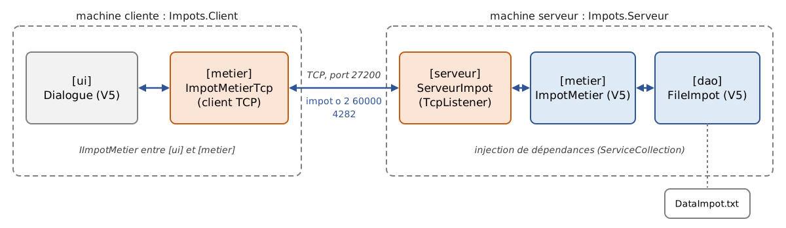
- une machine [serveur] héberge les couches [metier] et [dao] de la version 5. Une couche [serveur] est construite pour permettre à des clients du réseau d'interroger le service de calcul de l'impôt, avec un protocole TCP à lignes de texte ;
- une machine [client] héberge la couche [ui] de la version 5. Une nouvelle couche [metier], cliente TCP du serveur, lui permet d'interroger le service de calcul de l'impôt.
L'architecture change profondément : la version 5 était une application monoposte ; la version 8 devient une application client / serveur, et le serveur pourra servir plusieurs clients simultanément. Pourtant, nous n'écrirons que deux classes nouvelles, [ServeurImpot] et [ImpotMetierTcp], et deux programmes principaux : tout le reste est réutilisé sans modification.
La solution [ImpotsV8] est formée de deux projets console, qui référencent les projets de la version 5 :
12.9.2. Le protocole de dialogue
Nous gardons le protocole du serveur de 2008. Une fois le client connecté, le serveur lui envoie un message de bienvenue, puis accepte les commandes suivantes, une par ligne, sans tenir compte de la casse :
Commande | Réponse du serveur |
aide | la liste des commandes acceptées, sur quatre lignes |
impot marié nbEnfants salaireAnnuel | l'impôt d'une personne mariée (marié vaut [o]) ou non ([n]) ayant [nbEnfants] enfants et un salaire annuel de [salaireAnnuel] euros, par exemple [4282] en réponse à [impot o 2 60000] ; ou un message d'erreur, sur une ligne |
aurevoir | le message [Au revoir...] ; le serveur ferme ensuite la connexion |
Toute autre commande reçoit la réponse [Commande non reconnue. Utilisez la commande aide.]
12.9.3. Le serveur de calcul de l'impôt
12.9.3.1. Le projet
Le fichier [Impots.Serveur.csproj] est le suivant :
- lignes 12-13 : les couches [dao] et [metier] de la version 5 sont référencées par leurs projets. Les fichiers de données [DataImpot.txt] et [DataImpot.json] du projet [Impots.Dao] sont recopiés dans le dossier de sortie du serveur ;
- lignes 18-19 : le conteneur d'injection de dépendances et la lecture d'un fichier de configuration JSON, comme dans la version 5 ;
- ligne 24 : le fichier de configuration est recopié à côté de l'exécutable.
Le fichier de configuration [appsettings.json] :
- lignes 2-4 : la configuration de la couche [dao], identique à celle de la version 5 : les tranches d'impôt sont lues dans le fichier texte [DataImpot.txt] ;
- lignes 6-8 : le port d'écoute du serveur et l'écho du dialogue avec les clients dans le journal du serveur. Le serveur de 2008 avait une console d'administration (commandes [start port], [stop], [echo start], [echo stop], [status], [quit]) ; nous avons préféré un fichier de configuration et l'arrêt par Ctrl-C, plus simples et plus proches de ce que font les serveurs actuels.
12.9.3.2. Le programme principal
Le fichier [Program.cs] du serveur est le suivant :
On reconnaît le programme principal de la version 5 :
- lignes 13-20 : la lecture de la configuration. Les valeurs sont des chaînes de caractères : le port et l'écho sont convertis avec [TryParse], des valeurs par défaut étant prévues ;
- lignes 25-33 : les couches [dao] et [metier] sont enregistrées dans le conteneur exactement comme dans la version 5 ;
- lignes 35-36 : la nouveauté. Les options du serveur (port, écho) sont enregistrées sous la forme d'un objet déjà construit, puis la couche [serveur] elle-même. Le constructeur de [ServeurImpot] attend un [IImpotMetier] et un [OptionsServeur] : le conteneur les lui fournira ;
- ligne 40 : la création du serveur entraîne celle de la couche [metier], qui entraîne celle de la couche [dao] ; c'est à ce moment que le fichier [DataImpot.txt] est lu. Une erreur (fichier absent, mal formé) est affichée et le programme s'arrête (lignes 42-50) ;
- lignes 54-58 : Ctrl-C annule le jeton [annulation], comme dans le serveur d'écho ;
- ligne 61 : le serveur s'exécute jusqu'à l'annulation du jeton.
12.9.3.3. La couche [serveur]
La classe [ServeurImpot] est la suivante :
1 2 3 4 5 6 7 8 9 10 11 12 13 14 15 16 17 18 19 20 21 22 23 24 25 26 27 28 29 30 31 32 33 34 35 36 37 38 39 40 41 42 43 44 45 46 47 48 49 50 51 52 53 54 55 56 57 58 59 60 61 62 63 64 65 66 67 68 69 70 71 72 73 74 75 76 77 78 79 80 81 82 83 84 85 86 87 88 89 90 91 92 93 94 95 96 97 98 99 100 101 102 103 104 105 106 107 108 109 110 111 112 113 114 115 116 117 118 119 120 121 122 123 124 125 126 127 128 129 130 131 132 133 134 135 136 137 138 139 140 141 142 143 144 | |
- ligne 8 : les options du serveur, un enregistrement positionnel (C# 9) ;
- ligne 11 : la classe reçoit la couche [metier] et ses options par son constructeur primaire (C# 12). Elle ne connaît de la couche [metier] que son interface [IImpotMetier] et ignore tout de la couche [dao] ;
- lignes 14-18 : les réponses fixes du protocole. La réponse à la commande [aide] contient des \n : elle sera reçue par le client sous la forme de quatre lignes, comme en 2008 ;
- lignes 21-54 : la boucle d'attente des clients. C'est celle du serveur d'écho de la première partie : chaque client est servi par une tâche asynchrone que l'on n'attend pas (ligne 36), l'annulation du jeton termine l'attente d'un client (ligne 40) et l'on attend la fin des services en cours avant de s'arrêter (ligne 53). Le serveur de 2008 confiait chaque client à un thread d'un pool limité à 10 threads, qui restait bloqué pendant tout le service ; ici, aucun thread n'est immobilisé par un client qui réfléchit ;
- lignes 58-116 : le service rendu à un client :
- lignes 70-76 : une fonction locale qui envoie une réponse au client, et l'écrit aussi dans le journal si l'écho est activé ;
- ligne 80 : une fois le client connecté, le serveur lui envoie le message de bienvenue ;
- ligne 82 : la boucle de lecture des commandes, qui s'arrête si le client ferme la connexion ou si le serveur est arrêté ;
- ligne 89 : la commande, mise en minuscules, est décomposée en champs. Le cours de 2008 utilisait [Regex.Split] avec le modèle [\s+] ; l'option [RemoveEmptyEntries] de [Split] supprime de même les champs vides dus à plusieurs espaces consécutifs ;
- ligne 90 : un motif de liste (C# 11) : la commande est formée du seul mot [aurevoir]. Le serveur répond et sort de la boucle : la connexion est fermée à la sortie du bloc [using (client)] ;
- lignes 96-100 : une expression [switch] avec des motifs de liste choisit la réponse : [["aide"]] reconnaît la commande [aide] seule, [["impot", ..]] une commande commençant par [impot], suivie d'un nombre quelconque de champs (motif de tranche [..]). Le serveur de 2008 fermait la connexion à la réception d'une ligne vide ; elle reçoit maintenant la réponse [Commande non reconnue] ;
- lignes 121-138 : le calcul de l'impôt :
- lignes 124-128 : un seul motif de liste vérifie que la commande a quatre champs, que le deuxième vaut [o] ou [n], et place les deux derniers dans les variables [enfants] et [salaire] ; on vérifie ensuite que ce sont des entiers. Le code de 2008 faisait ces vérifications en quatre tests successifs ;
- ligne 133 : le calcul est demandé à la couche [metier]. Une même instance de [ImpotMetier] sert tous les clients, éventuellement en même temps, depuis des threads différents : c'est possible parce que cette classe ne modifie aucune donnée après sa construction (son tableau de tranches n'est que lu) ;
- ligne 138 : si la couche [metier] lance une exception (par exemple pour un nombre d'enfants négatif), son message est renvoyé au client. Ce message peut contenir des fins de ligne : on les remplace par des espaces, car le protocole impose une réponse sur une ligne ;
- ligne 143 : le journal du serveur, sur la console : chaque ligne est précédée de l'heure, ce qui permettra de voir le déroulement des services simultanés. [Console.WriteLine] peut être appelée sans précaution depuis plusieurs threads : ses écritures ne se mélangent pas.
12.9.4. Le client du serveur de calcul de l'impôt
Le cours de 2008 reprenait l'interface graphique de la version 7 ; nous reprenons l'interface console de la version 5, la classe [Ui.Dialogue], sans la modifier.
12.9.4.1. La couche [metier] du client
La couche [ui] dialogue avec une couche [metier] dont elle ne connaît que l'interface [IImpotMetier] :
Il suffit donc de lui fournir une autre implémentation de cette interface, qui, au lieu de calculer l'impôt, le demande au serveur. C'est la classe [ImpotMetierTcp] :
- ligne 8 : la classe implémente [IImpotMetier]. Elle implémente aussi [IDisposable] : elle détient une connexion réseau, qu'il faudra fermer ;
- lignes 11-13 : la connexion au serveur et ses flux de lecture et d'écriture. La classe de 2008 ouvrait une nouvelle connexion pour chaque calcul ; nous ouvrons une seule connexion, utilisée pour tous les calculs d'une session : c'est plus économe, et le serveur voit un client par session de l'utilisateur ;
- lignes 16-29 : le constructeur se connecte au serveur et lit son message de bienvenue (ligne 25). Une erreur de connexion est encapsulée dans une [ImpotException], l'exception de l'application ;
- lignes 34-49 : le calcul de l'impôt. La commande [impot o 2 60000] est envoyée au serveur (ligne 39) et sa réponse lue. Si celle-ci est un entier, c'est l'impôt ; sinon c'est un message d'erreur du serveur, qui est transmis dans une [ImpotException] (ligne 49). Le code de 2008 convertissait directement la réponse en entier, et invitait le lecteur à l'améliorer : un message d'erreur du serveur y provoquait une exception de conversion qui masquait la vraie cause de l'erreur ;
- ligne 53 : [ReadLine] rend [null] lorsque le serveur a fermé la connexion : on lance alors une [ImpotException] ;
- lignes 57-68 : la fin de la connexion. Le client prend congé du serveur avec la commande [aurevoir], puis ferme la connexion. Si le serveur a déjà coupé la connexion, l'[IOException] qui en résulte est ignorée.
Une question se pose : pourquoi cette classe utilise-t-elle les méthodes synchrones [TcpClient(machine, port)], [ReadLine] et [WriteLine], alors que tout ce chapitre utilise leurs versions asynchrones ? Parce que l'interface [IImpotMetier] de la version 5 est synchrone : [CalculerImpot] rend un [int], pas un [Task<int>], et la couche [ui] l'appelle sans [await]. Pour utiliser [ReadLineAsync], il faudrait soit attendre son résultat de façon bloquante ([ReadLineAsync().Result]), ce que le chapitre 9 a déconseillé, soit rendre l'interface asynchrone, et donc modifier les couches [metier] et [ui] de la version 5. Pour un programme console qui ne sert qu'un utilisateur, les méthodes synchrones sont parfaitement adaptées : le thread principal n'a rien d'autre à faire qu'attendre la réponse. L'asynchronisme est indispensable du côté du serveur, qui doit servir de nombreux clients, pas du côté de ce client. Lorsque nous écrirons de nouvelles couches au chapitre suivant, nous les doterons d'interfaces asynchrones.
12.9.4.2. Le programme principal du client
Le projet [Impots.Client.csproj] référence la couche [metier] et la couche [ui] de la version 5 :
Le projet [Impots.Ui] est une application console : un projet peut en effet référencer un autre projet exécutable, pour utiliser ses classes publiques, ici [Ui.Dialogue]. Le fichier [Program.cs] est le suivant :
- lignes 9-10 : la machine et le port du serveur, passés en arguments, avec des valeurs par défaut ;
- ligne 14 : la couche [metier] enregistrée dans le conteneur est maintenant [ImpotMetierTcp]. Son constructeur attendant deux paramètres que le conteneur ne connaît pas, on lui fournit une fonction de fabrication ;
- ligne 16 : le conteneur est déclaré avec [using]. Lorsqu'il est libéré, à la fin du programme, il libère à son tour les objets [IDisposable] qu'il a créés : la méthode [Dispose] de [ImpotMetierTcp] sera appelée, et la connexion fermée proprement ;
- ligne 19 : la création de la couche [metier], donc la connexion au serveur ;
- ligne 22 : le dialogue de la version 5, inchangé. La couche [ui] ignore que l'impôt est calculé par un serveur distant ;
- lignes 24-27 : une erreur de connexion ou de communication est affichée par la méthode [AfficherErreur] de la version 5.
12.9.5. Exécutions
Le serveur est lancé dans une fenêtre de commandes, depuis le dossier [Impots.Serveur]. Dans une autre fenêtre, le client est lancé depuis le dossier [Impots.Client] :
Le dialogue est exactement celui de la version 5 : on retrouve les valeurs de contrôle (4282 et 2959 pour une personne mariée ayant 2 ou 3 enfants et un salaire de 60 000 euros, 11519 pour une personne non mariée sans enfant), et les mêmes messages pour les saisies incorrectes. Ces derniers sont produits par la couche [ui] du client, qui vérifie les saisies avant de demander le calcul : les saisies incorrectes n'atteignent jamais le serveur.
Lançons maintenant deux clients A et B dans deux fenêtres, B démarrant pendant que A est encore connecté. Chacun fait deux calculs. Dans la fenêtre du client A :
Dans la fenêtre du client B :
Pour voir les réponses du serveur à des commandes incorrectes, il faut un client qui envoie les commandes telles qu'elles sont tapées : le client TCP générique de la première partie convient parfaitement. Le serveur parle le premier, ce que ce client sait gérer :
- ligne 2 : le message de bienvenue, arrivé avant même l'invite du client ;
- lignes 5-8 : la réponse à la commande [aide], sur quatre lignes ;
- ligne 11 : la casse de la commande est ignorée ;
- lignes 13-15 : deux commandes de calcul mal formées ;
- ligne 18 : la commande est bien formée, mais la couche [metier] refuse un nombre d'enfants négatif ; le message de son exception (en anglais : il vient de .NET) a été renvoyé sur une seule ligne ;
- ligne 20 : une commande inconnue ;
- lignes 21-23 : après la commande [aurevoir], le serveur a fermé la connexion.
Le serveur est ensuite arrêté par Ctrl-C, pendant qu'un dernier client est connecté. Celui-ci a fait un premier calcul avant l'arrêt et tape sa seconde demande après :
La lecture de la réponse a rendu [null] : la couche [metier] a lancé une [ImpotException], que le programme principal a affichée. Une fois le serveur arrêté, un nouveau client ne peut plus se connecter :
Voici enfin le journal du serveur pour l'ensemble de ces essais :
- lignes 3-13 : le client de la première exécution. Avec l'écho, on voit toutes les commandes reçues et toutes les réponses envoyées. On remarque la commande [aurevoir] (ligne 11), envoyée par la méthode [Dispose] de [ImpotMetierTcp] lorsque l'utilisateur a terminé : le dialogue a été clos proprement ;
- lignes 14-31 : les clients A (client 1) et B (client 2). Le client 2 est arrivé (ligne 16) alors que le client 1 était encore servi, et leurs demandes ont été traitées en alternance, au fur et à mesure de leur arrivée : le serveur sert bien plusieurs clients simultanément ;
- lignes 32-53 : la session du client TCP générique ;
- lignes 54-61 : le dernier client, servi au moment de l'arrêt. Ctrl-C a annulé le jeton ; les deux opérations qui l'attendaient, la lecture d'une commande du client 4 et l'attente d'un nouveau client, se sont terminées par une [OperationCanceledException], dans un ordre qui dépend de l'ordonnancement des threads. Le serveur a attendu la fin du service en cours avant de s'arrêter.
12.9.6. Conclusion
De nouveau, nous avons pu réutiliser du code existant sans le modifier : les couches [dao] et [metier] de la version 5 côté serveur, la couche [ui] côté client. Cela a été rendu possible par l'utilisation systématique d'interfaces et par l'injection de dépendances : pour distribuer l'application sur deux machines, il a suffi d'ajouter une couche [serveur] au-dessus de la couche [metier] et de fournir à la couche [ui] une autre implémentation de [IImpotMetier]. Si la version 1 avait mêlé le calcul de l'impôt et le dialogue avec l'utilisateur dans le même programme, rien de tout cela n'aurait été réutilisable. On notera que la couche [ui] n'a aucune connaissance du fait que c'est un serveur distant qui calcule le montant de l'impôt.
Notre protocole maison a cependant ses limites : il faut écrire le serveur, gérer les connexions, analyser les commandes, convertir les réponses, et un client écrit dans un autre langage devrait connaître ce protocole particulier. La version 9, au chapitre suivant, remplacera le serveur TCP par un service web : le protocole sera HTTP, les données seront échangées en JSON, et le client utilisera [HttpClient].
12.10. Conclusion
Ce chapitre a présenté la programmation Internet avec .NET, en partant des fondations pour arriver aux classes de haut niveau :
- la première partie a rappelé le fonctionnement des protocoles de l'Internet (IP, TCP, UDP, DNS) et des protocoles d'application à lignes de texte (HTTP, SMTP, POP, FTP), puis présenté les classes [IPAddress] et [Dns], et les classes [TcpClient] et [TcpListener] utilisées de façon asynchrone. Avec elles, nous avons écrit des serveurs qui servent plusieurs clients simultanément, des clients TCP génériques, et un client web qui parlait HTTP « à la main » ;
- la seconde partie a présenté les classes spécialisées dans un protocole. Pour HTTP, la classe [HttpClient] remplace [WebClient] et [WebRequest], obsolètes : elle fait en une instruction ce que notre client TCP faisait en cinquante lignes, gère les redirections, les formulaires, le JSON, les délais et l'annulation, et doit être réutilisée d'une requête à l'autre. Pour SMTP, la classe [SmtpClient] reste utilisable, la bibliothèque MailKit lui étant préférée pour les nouveaux développements ;
- l'application exemple est devenue une application client / serveur, sans modification de ses couches existantes.
Les principes de la programmation asynchrone vus au chapitre 9 y ont trouvé leur principal champ d'application : un serveur asynchrone sert un grand nombre de clients avec quelques threads, et un client asynchrone attend les réponses du réseau sans immobiliser de thread. Écrire un serveur TCP et inventer son protocole reste toutefois l'exception : la plupart des applications réparties communiquent aujourd'hui par HTTP, au moyen de services web qui échangent des données JSON. C'est l'objet du chapitre suivant.